This is an introduction to the deconICA R package.
DeconICA stands for Deconvolution of transcriptome through Immune Component Analysis.
The aim of the project is to adapt blind source separation techniques to extract immune-related signals from mixed biological samples. A great exaple of mixed biological sample is transcriptome measured in heterogenous tissue such as blood or tumor biopsy.
In this vignette we present short introduction to the blind source spearation techniques, the biological foundation of the problem and finally we walk you through examples on how to use deconICA R package.
If you are intrested only in practical examples of deconICA, skip directly to Tutorial section.
You can access this documentation on the DeconICA website.
Background
Blind source separation
Blind source separation (BSS) is the separation of a set of source signals from a set of mixed signals, without the aid of information (or with very little information) about the source signals or the mixing process. The separation is possible under a variety of conditions.
A known example of BSS is a cocktail party problem, there is a group of people talking at the same time. You have multiple microphones picking up mixed signals, but you want to isolate the speech of a single person. BSS can be used to separate the individual sources by using mixed signals (Hyvärinen and Oja 2000)
Application of BSS to biological data
Through decomposition of the transcriptome matrix into components (aka factors or sources) we hope to recover underlying biological functions and cell types.
In tumor biopsies is it expected to find a part of Tumor Microenvironment (TME). TME includes tumor cells, fibroblasts, and a diversity of immune cells. Most studies have focused on individual cell types in model tumor systems, and/or on individual molecules mediating a crosstalk between two cells. Unraveling the complexity, organization, and mutual interactions of TME cellular components represents a major challenge.
Several methods have been proposed to estimate the mixing proportions of sources in biological mixtures, such as: least squares regression (Abbas et al. 2009) and more recently, non-negative least squares regression [Qiao2012], quadratic programming [Gong2011] and supported vector regression (Newman et al. 2015). Even though (Vallania et al. 2017) shows that the used algorithm do not impact substantially the results. According to Vallania et al. (2017), what matters are the gene signatures used as an input of overmentioned methods.
BSS methods do not use pre-defined cell-type signatures. The transcriptomic matrix is decomposed into a certain number of sources and then the sources are interpreted with available knowledge (gnee signatures, cell profiles).
The main argument of using BSS over supervised decomposition techniques is that the obtained result is unbiased by a priori biological hypothesis (however thre are alwyas statistical hypothesis about the nature of data) or knowledge. In addition BSS tachniques allow discovery of new biological signatures that can extend our available knowledge.
In the case of cell type separation from mix of tumor bulk, supervised techniques as CIBERSORT (Newman et al. 2015), MCP counter (Becht et al. 2016, Becht and de Reynies (2016)), TIMER (Li et al. 2016) etc. are based on optimised blood signatues. With an evidence brought by single cell data, these signatures are not always characterising immune cells infiltrating tumors (Schelker et al. 2017). Some methods, like EPIC (Racle et al. 2017), use single-cell based signatures. However, today, the single cell based signatures are limited to few cancer subtypes and often based on small number of patients, incoparable with the heterogeneity that is hidden in the bulk transcriptome cohort studies.
Thefore, obtaining informative cell-type signature of immune cells infiltrating tumor biopsy samples at high thoughput remains an open question that we attept to approach with deconICA pipeline.
Here is a short overview of BSS or related algorithms that one can potentially use as an input to deconICA. At its actual state deconICA facilitates starting pipeline with ICA.
Independent Components Analysis
Independent Component Analysis (ICA) is a matrix factorization method for data dimension reduction (Hyvärinen and Oja 2000). ICA defines a new coordinate system in the multi-dimensional space such that the distributions of the data point projections on the new axes become as mutually independent as possible. To achieve this, the standard approach is maximizing the non-gaussianity of the data point projection distributions (Hyvärinen and Oja 2000). There is no contraint imposed on the non-negativity (in contrary to NMF) or orthogonality (in contrast to PCA). In our analysis, the negative projections are interpreted in terms of absolute values and only one side of a component is taken into account.
A mathematical way to formalize ICA is the set of equations:
the set of individual source signals \(s(t) = (s_{1}(t), ..., s_{n}(t))^T\) is mixed using a matrix \(A = [a_{ij}] \in \mathbb{R}^{m \times n}\) to produce a set of mixed signals, \(x(t) = (x_{1}(t), ..., x_{m}(t))^T\), as follows:
\[x(t) = A \times s(t)\]
The above equation is effectively ‘inverted’ as follows. Blind source separation separates the set of mixed signals \(x(t)\), through the determination of an ‘unmixing’ matrix to \(B = [b_{ij}] \in \mathbb{R}^{m \times n}\) ‘recover’ an approximation of the original signals, \(y(t) = (y_{1}(t), ..., y_{n}(t))^T\).
\[y(t) = B \times x(t)\]
This algorithm uses higher-order moments for matrix approximation, considering all Gaussian signals as noise.
Most efficient application of ICA is fastICA (Hyvärinen and Oja 2000). However, the speed comes with a price, the results of the algoritms are not exact. This is why we recommend use of ICA with stabilization (ICASSO (Himberg and Hyvärinen 2003)) for reproducible results. More about this is the vignette Running matlab implementation of ICA.
For applications in molecular biology, Independent Component Analysis (ICA) models gene expression data as an action of a set of statistically independent hidden factors.
Here is a small list of ICA application to biological data:
- Independent component analysis uncovers the landscape of the bladder tumor transcriptome and reveals insights into luminal and basal subtypes (Biton et al. 2014)
- Elucidating the altered transcriptional programs in breast cancer using independent component analysis (Teschendorff et al. 2007)
- Principal Manifolds for Data Visualisation and Dimension Reduction (Gorban, A.N., Kégl, B., Wunsch, D.C., Zinovyev 2008)
- Independent component analysis of microarray data in the study of endometrial cancer (Saidi et al. 2004)
- Blind source separation methods for deconvolution of complex signals in cancer biology (Zinovyev et al. 2013)
- Determining the optimal number of independent components for reproducible transcriptomic data analysis (Kairov et al. 2017)
- Application of Independent Component Analysis to Tumor Transcriptomes Reveals Specific And Reproducible Immune-related Signals (Czerwinska et al. 2018)
NMF
Non-negative matrix factorization (NMF) is matrix factorization technique assuming that the mixing, source and mixed matrices are all non negative. It is usually written as
\[V = WH\]
Matrix multiplication can be implemented as computing the column vectors of \(V\) as linear combinations of the column vectors in \(W\) using coefficients supplied by columns of \(H\). That is, each column of \(V\) can be computed as follows:
\[{v}_{i}={W}{h}_{i}\]
where \(v_{i}\) is the \(i\)-th column vector of the product matrix \(V\) and \(h_{i}\) is the \(i\)-th column vector of the matrix \(H\).
There are many types of NMF, that differ in implementation, ways the error terms are defined and minimized.
Gaujoux and Seoighe (2012) proposed a framework of semi-supervised NMF for solving cell and tissue mixtures in his R package CellMix (Gaujoux and Seoighe 2013). His work deconvolution was of great inspiration for us and food for thoughts on the advantages and limits of BBS applied for cell type deconvolution.
Renaud Gaujoux is also an author of NMF R package (Gaujoux and Seoighe 2010; Gaujoux and Seoighe 2015b; Gaujoux and Seoighe 2015a).
Work of Cantini et al. ((???)) showed that ICA produces more reproducible results than NMF when applied to tumor transcriptomes.
However, we can always imagine the cases where NMF factorisation will be judged more adequate than ICA. Our pipeline is adaptable to interpretation of NMF factors without a need for major adjustments. We will be seen extend vignettes to show application of deconICA for interpreatation of NMF components.
Here is a small list of NMF application to biological data:
- Metagenes and molecular pattern discovery using matrix factorization (Brunet et al. 2004)
- Tumor Clustering Using Nonnegative Matrix Factorization With Gene Selection (Chun-Hou Zheng et al. 2009)
- Semi-supervised Nonnegative Matrix Factorization for gene expression deconvolution: a case study (Gaujoux and Seoighe 2012)
- Post‐modified non‐negative matrix factorization for deconvoluting the gene expression profiles of specific cell types from heterogeneous clinical samples based on RNA‐sequencing data (Liu et al. 2017)
- Virtual microdissection identifies distinct tumor- and stroma-specific subtypes of pancreatic ductal adenocarcinoma (Moffitt et al. 2015)
- A non-negative matrix factorization method for detecting modules in heterogeneous omics multi-modal data (Yang and Michailidis 2015)
Convex hull methods
An emerging family of BSS methods are convex geometry (CG)-based methods. Here, the “sources” are found by searching the facets of the convex hull spanned by the mapped observations solving a classical convex optimization problem (Yang and Michailidis 2015). The convex hull-based method does not require the independence assumption, nor the uncorrelation assumption which can be interesing in the setup of closely realted cell types. Wang et al. (2016) apply their method of convex analysis of mixtures (CAM) to tissue and cell mixtures claiming to provide new signatures. So far the published R-Java package does not allow to extract those signtures and it is not scalable to tumor transcriptomes. Another tool CellDistinguisher (Newberg et al. 2018) provides an user-friendly R package. However, authors do not provide any method for estimation of number of sources. Additionaly, quantitative weights are provided only for signature genes that can vary for different sources.
However, combining convex hull methods and deconICAcan possibily lead to a meanigfull interpretation.
Here is a small list of convex-hull application to biological data:
- Computational de novo discovery of distinguishing genes for biological processes and cell types in complex tissues [Newberg2018]
- Mathematical modelling of transcriptional heterogeneity identifies novel markers and subpopulations in complex tissues (Wang et al. 2016)
- Geometry of the Gene Expression Space of Individual Cells (Yang and Michailidis 2015)
- Applying unmixing to gene expression data for tumor phylogeny inference (Schwartz and Shackney 2010)
- Inferring biological tasks using Pareto analysis of high-dimensional data (Hart et al. 2015)
Attractor metagenes
Another way of generating signatures, that can be run in semi-supervised or unsupervised mode is attractor metagenes method proposed by Cheng, Ou Yang, and Anastassiou (2013). Authors describe their rationale as follows:
We can first define a consensus metagene from the average expression levels of all genes in the cluster, and rank all the individual genes in terms of their association (defined numerically by some form of correlation) with that metagene. We can then replace the member genes of the cluster with an equal number of the top-ranked genes. Some of the original genes may naturally remain as members of the cluster, but some may be replaced, as this process will ‘‘attract’’ some other genes that are more strongly correlated with the cluster. We can now define a new metagene defined by the average expression levels of the genes in the newly defined cluster, and re-rank all the individual genes in terms of their association with that new metagene; and so on. It is intuitively reasonable to expect that this iterative process will eventually converge to a cluster that contains precisely the genes that are most associated with the metagene of the same cluster, so that any other individual genes will be less strongly associated with the metagene. We can think of this particular cluster defined by the convergence of this iterative process as an ‘‘attractor,’’ i.e., a module of co-expressed genes to which many other gene sets with close but not identical membership will converge using the same computational methodology.
The produced signatures’ weights are non-negative. In the original paper, the generation of tumor signatures leads to three reproductible signatures among different tumor types. Typically with the essential parmeter \(\alpha = 5\), they discovered typically approximately 50 to 150 resulting attractors. Although, it is possible by tunig \(\alpha\) obtain more or less signatures that would be possibly interpretable with deconICA.
Attractor metagenes R code is available on Synapse portal.
Literature:
- Biomolecular Events in Cancer Revealed by Attractor Metagenes (Cheng, Ou Yang, and Anastassiou 2013)
- Discovering Genome-Wide Tag SNPs Based on the Mutual Information of the Variants (Elmas et al. 2016)
- Meta-analysis of the global gene expression profile of triple-negative breast cancer identifies genes for the prognostication and treatment of aggressive breast cancer (Al-Ejeh et al. 2014)
Tutorial
How to install
You can install deconICA from GitHub with:
#install.packages("devtools")
devtools::install_github("UrszulaCzerwinska/DeconICA", build_vignettes = TRUE)or
install.packages("githubinstall")
githubinstall::githubinstall("DeconICA", build_vignettes = TRUE)[TO DO] You can install the stable version from CRAN
install.packages('deconica', dependencies = TRUE)Then load package with
library(deconica)Demonstration of DeconICA package
Simulated data
We assed first an ability to estimate bundance of cell types in a synthetic cell mixture. Here we use function simulate_gene_expresssion()inspired by CellMix::rmix function. However, compared to rmix function cell profiles distribution follow user defined distribution (uniform in rmix) set here by default to negative binomial which approaches the biological reality.
First we create the mix1 that is a mix of 10 cell types mixed at random proportions. Obatined matrix has 10000 genes and 130 samples. Each celltype has 20 specific markers with 2-fold difference with respect to other genes.
set.seed(123)
mix1<-simulate_gene_expresssion(10, 10000, 130,0, markers=20)We can visualise the mixed expression matrix.
pheatmap::pheatmap(mix1$expression)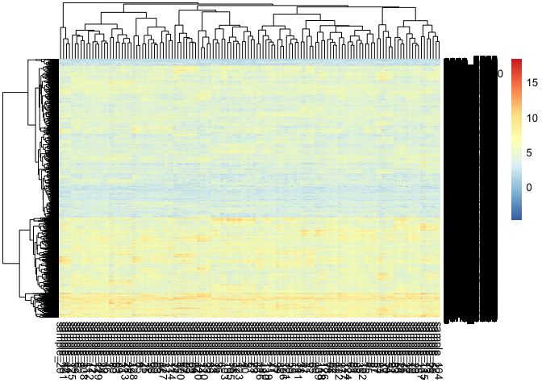 We can also visualize the purified gene expression of each cell.
pheatmap::pheatmap(mix1$basis_matrix)
Then we apply ICA (matlab version with stabilisation see vignette:###) and we decompose to 11 components. If you don’t have file you can find in data-vignettes the file mix1_ica.RData.
mix1_ica <- run_fastica (
mix1$expression,
overdecompose = FALSE,
with.names = FALSE,
gene.names = row.names(mix1$expression),
samples = colnames(mix1$expression),
n.comp = 11,
R = FALSE
)Subsequently, we compute correlation between components and the orignal cell profiles.
basis.list <- make_list(mix1$basis_matrix)
mix1_corr.basis <-
correlate_metagenes (mix1_ica$S, mix1_ica$names,
metagenes = basis.list,
orient.long = TRUE,
orient.max = FALSE)mix1_corr.basis_p <- radar_plot_corr(mix1_corr.basis, size.el.txt = 10, point.size = 2)mix1_corr.basis_p$p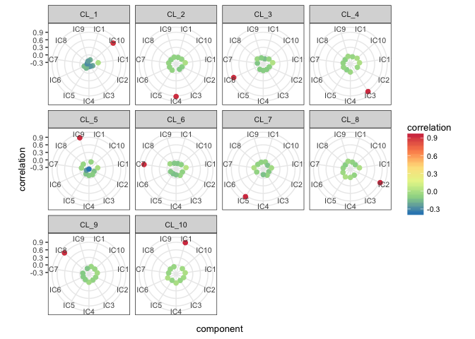
We automatically assign a component to a cell type.
mix1.assign <- assign_metagenes(mix1_corr.basis$r, exclude_name = NULL)
#> no profiles to exlude provided
#> DONEWe use top 10 genes as signatures.
mix1_ica.10 <-
generate_markers(mix1_ica, 10, sel.comp = as.character(mix1.assign[, 2]))It is possible to viusalize the basis marix as a heatmap
mix1_ica.10.basis <-
generate_basis(
df = mix1_ica,
sel.comp = as.character(mix1.assign[,2]),
markers = mix1_ica.10
)pheatmap::pheatmap(mix1_ica.10.basis, fontsize_row = 8)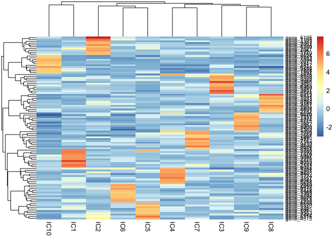
We compute scores which are by default simple mean value of expression of the top genes in the original gene matrix.
scores.mix1.ica <-
get_scores(mix1_ica$log.counts, mix1_ica.10)We can see on the correlation plot almost prefect correspondance with the original propotions (mix1$prop)
scores_corr_plot(scores.mix1.ica,t(mix1$prop), method="number", tl.col = "black")
One important feature of the ICA is that even if we do not know the exact number of components, when we overestimate the number of components, the signals are not altered. Our team proposed a method called MSTD that was developped for cancer transcriptomes to estimate optimal number of components (Kairov et al. 2017). Here we just slightly overestimate the number of components to 20.
Again you can load the decompostion mix1_ica.20.RData from data-vignettesrepository of the package
mix1_ica.20 <- run_fastica (
mix1$expression,
overdecompose = FALSE,
with.names = FALSE,
gene.names = row.names(mix1$expression),
n.comp = 20,
R = FALSE
)Then we repeat the pipeline…
mix1_corr.basis.20 <-
correlate_metagenes (
mix1_ica.20$S,
mix1_ica.20$names,
metagenes = basis.list,
orient.long = FALSE,
orient.max = TRUE
)
mix1_corr.basis.20_p <- radar_plot_corr(mix1_corr.basis.20,
size.el.txt = 10,
point.size = 2)mix1_corr.basis.20_p$p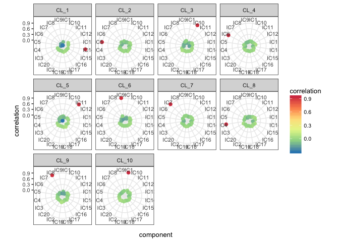
mix1.assign.20 <- assign_metagenes(mix1_corr.basis.20$r, exclude_name = NULL)
#> no profiles to exlude provided
#> DONE
mix1_ica.20$S <- mix1_corr.basis.20$S.max
mix1_ica.20_10 <- generate_markers(mix1_ica.20, 10, sel.comp = as.character(mix1.assign.20[,2]), orient.long = FALSE)
scores.mix1.ica.20 <-
get_scores(mix1_ica.20$log.counts, mix1_ica.20_10)scores_corr_plot(scores.mix1.ica.20,t(mix1$prop), method="number", tl.col = "black")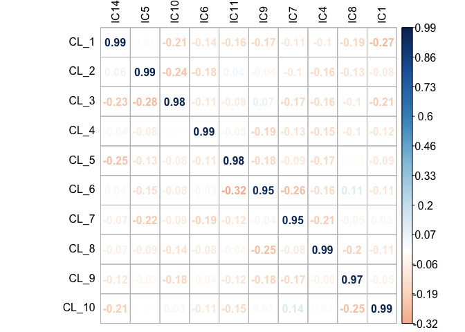
And we observe that the estimated proportions are correctly estimated.
in vitro mixtures of immune cells
In this demo we use data published in ((Becht et al. 2016))[https://www.ncbi.nlm.nih.gov/geo/query/acc.cgi?acc=GSE64385] GSE54385that you can dowload yourself directly from GEO using follwoing lines of code.
library(Biobase)
library(GEOquery)
library(limma)
# load series and platform data from GEO
GSE64385 <- getGEO("GSE64385", GSEMatrix =TRUE, AnnotGPL=TRUE)[[1]]Or you can load GSE64385.RData from data-vignettes repo.
This dataset contains 5 immune cell types sorted from 3 healthy donors’ peripheral bloods and mixed at different proportions.
head(exprs(GSE64385))
#> GSM1570043 GSM1570044 GSM1570045 GSM1570046 GSM1570047
#> 1007_s_at 10.102138 10.155999 8.791912 8.896220 9.191570
#> 1053_at 9.228374 9.106643 7.905549 7.872256 8.001900
#> 117_at 4.965703 5.244713 9.161352 8.624783 10.440195
#> 121_at 7.096468 7.140063 6.914336 6.887061 6.759080
#> 1255_g_at 3.722354 3.781077 3.591351 3.532078 3.573182
#> 1294_at 6.785320 6.971410 9.331253 9.294259 9.130948
#> GSM1570048 GSM1570049 GSM1570050 GSM1570051 GSM1570052
#> 1007_s_at 8.755960 8.739414 8.913141 9.065699 8.678224
#> 1053_at 7.660617 7.698507 8.052159 7.792194 7.491376
#> 117_at 9.682815 9.989239 9.024631 9.806865 10.208413
#> 121_at 6.880957 6.839934 6.845430 6.906710 6.694776
#> 1255_g_at 3.678108 3.520875 3.661857 3.572804 3.578966
#> 1294_at 9.370041 9.351603 9.296094 9.372588 9.021147
#> GSM1570053 GSM1570054
#> 1007_s_at 8.683351 8.856388
#> 1053_at 7.742929 8.002106
#> 117_at 8.861634 9.842995
#> 121_at 7.050564 6.920022
#> 1255_g_at 3.585279 3.631184
#> 1294_at 9.417215 9.277763Here is the raw matrix of proportions.
cell_prop <- pData(GSE64385)[ , c(1,2, 10, 11,12, 13, 14, 15, 16, 17)]
kable(cell_prop, "html", row.names = TRUE) %>%
kable_styling(font_size = 8)| title | geo_accession | characteristics_ch1 | characteristics_ch1.1 | characteristics_ch1.2 | characteristics_ch1.3 | characteristics_ch1.4 | characteristics_ch1.5 | characteristics_ch1.6 | characteristics_ch1.7 | |
|---|---|---|---|---|---|---|---|---|---|---|
| GSM1570043 | Mix_1 | GSM1570043 | cell line: HCT116 | cell line type: colon cancer | hct116 mrna mass (ng): 10 | nk cells mrna mass (ng): 0 | b cells mrna mass (ng): 0 | neutrophils mrna mass (ng): 0 | t cells mrna mass (ng): 0 | monocytes mrna mass (ng): 0 |
| GSM1570044 | Mix_2 | GSM1570044 | cell line: HCT116 | cell line type: colon cancer | hct116 mrna mass (ng): 10 | nk cells mrna mass (ng): 0 | b cells mrna mass (ng): 0 | neutrophils mrna mass (ng): 0 | t cells mrna mass (ng): 0 | monocytes mrna mass (ng): 0 |
| GSM1570045 | Mix_3 | GSM1570045 | cell populations: HCT116, NK, B, neutrophils, T, monocytes | hct116 mrna mass (ng): 10 | nk cells mrna mass (ng): 10 | b cells mrna mass (ng): 0.6 | neutrophils mrna mass (ng): 0.3 | t cells mrna mass (ng): 2.5 | monocytes mrna mass (ng): 5 | disease status of blood donor: healthy |
| GSM1570046 | Mix_4 | GSM1570046 | cell populations: HCT116, NK, B, neutrophils, T, monocytes | hct116 mrna mass (ng): 10 | nk cells mrna mass (ng): 5 | b cells mrna mass (ng): 10 | neutrophils mrna mass (ng): 0.2 | t cells mrna mass (ng): 1.3 | monocytes mrna mass (ng): 2.5 | disease status of blood donor: healthy |
| GSM1570047 | Mix_5 | GSM1570047 | cell populations: HCT116, NK, B, neutrophils, T, monocytes | hct116 mrna mass (ng): 10 | nk cells mrna mass (ng): 2.5 | b cells mrna mass (ng): 5 | neutrophils mrna mass (ng): 2.5 | t cells mrna mass (ng): 0.6 | monocytes mrna mass (ng): 1.3 | disease status of blood donor: healthy |
| GSM1570048 | Mix_6 | GSM1570048 | cell populations: HCT116, NK, B, neutrophils, T, monocytes | hct116 mrna mass (ng): 10 | nk cells mrna mass (ng): 1.3 | b cells mrna mass (ng): 2.5 | neutrophils mrna mass (ng): 1.3 | t cells mrna mass (ng): 10 | monocytes mrna mass (ng): 0.6 | disease status of blood donor: healthy |
| GSM1570049 | Mix_7 | GSM1570049 | cell populations: HCT116, NK, B, neutrophils, T, monocytes | hct116 mrna mass (ng): 10 | nk cells mrna mass (ng): 0.6 | b cells mrna mass (ng): 1.3 | neutrophils mrna mass (ng): 0.6 | t cells mrna mass (ng): 5 | monocytes mrna mass (ng): 10 | disease status of blood donor: healthy |
| GSM1570050 | Mix_8 | GSM1570050 | cell populations: HCT116, NK, B, neutrophils, T, monocytes | hct116 mrna mass (ng): 10 | nk cells mrna mass (ng): 10 | b cells mrna mass (ng): 5 | neutrophils mrna mass (ng): 0.6 | t cells mrna mass (ng): 1.3 | monocytes mrna mass (ng): 0.6 | disease status of blood donor: healthy |
| GSM1570051 | Mix_9 | GSM1570051 | cell populations: HCT116, NK, B, neutrophils, T, monocytes | hct116 mrna mass (ng): 10 | nk cells mrna mass (ng): 0.6 | b cells mrna mass (ng): 10 | neutrophils mrna mass (ng): 1.3 | t cells mrna mass (ng): 2.5 | monocytes mrna mass (ng): 1.3 | disease status of blood donor: healthy |
| GSM1570052 | Mix_10 | GSM1570052 | cell populations: HCT116, NK, B, neutrophils, T, monocytes | hct116 mrna mass (ng): 10 | nk cells mrna mass (ng): 1.3 | b cells mrna mass (ng): 0.6 | neutrophils mrna mass (ng): 2.5 | t cells mrna mass (ng): 5 | monocytes mrna mass (ng): 2.5 | disease status of blood donor: healthy |
| GSM1570053 | Mix_11 | GSM1570053 | cell populations: HCT116, NK, B, neutrophils, T, monocytes | hct116 mrna mass (ng): 10 | nk cells mrna mass (ng): 2.5 | b cells mrna mass (ng): 1.3 | neutrophils mrna mass (ng): 0.2 | t cells mrna mass (ng): 10 | monocytes mrna mass (ng): 5 | disease status of blood donor: healthy |
| GSM1570054 | Mix_12 | GSM1570054 | cell populations: HCT116, NK, B, neutrophils, T, monocytes | hct116 mrna mass (ng): 10 | nk cells mrna mass (ng): 5 | b cells mrna mass (ng): 2.5 | neutrophils mrna mass (ng): 0.3 | t cells mrna mass (ng): 0.6 | monocytes mrna mass (ng): 10 | disease status of blood donor: healthy |
We manually extracted the immune cell proportions from the matrix
cell_prop.clean <- cell_prop [,1:2]
cell_prop.clean$NK <- c(0,0, 10, 5, 2.5, 1.3, 0.6, 10, 0.6, 1.3, 2.5, 5)
cell_prop.clean$Bcell <- c(0,0, 0.6, 10, 5, 2.5, 1.3, 5, 10, 0.6, 1.3,2.5)
cell_prop.clean$Neutrophils <- c(0,0, 0.3, 0.2, 2.5, 1.3, 0.6, 0.6, 1.3, 2.5, 0.2, 0.3 )
cell_prop.clean$Tcell <- c(0,0,2.5, 1.3, 0.6, 10, 5, 1.3, 2.5, 5,10,0.6 )
cell_prop.clean$Monocytes <- c(0,0, 5, 2.5, 1.3, 0.6, 10, 0.6, 1.3, 2.5, 5, 10)
kable(cell_prop.clean, "html", row.names = TRUE) %>%
kable_styling(font_size = 8)| title | geo_accession | NK | Bcell | Neutrophils | Tcell | Monocytes | |
|---|---|---|---|---|---|---|---|
| GSM1570043 | Mix_1 | GSM1570043 | 0.0 | 0.0 | 0.0 | 0.0 | 0.0 |
| GSM1570044 | Mix_2 | GSM1570044 | 0.0 | 0.0 | 0.0 | 0.0 | 0.0 |
| GSM1570045 | Mix_3 | GSM1570045 | 10.0 | 0.6 | 0.3 | 2.5 | 5.0 |
| GSM1570046 | Mix_4 | GSM1570046 | 5.0 | 10.0 | 0.2 | 1.3 | 2.5 |
| GSM1570047 | Mix_5 | GSM1570047 | 2.5 | 5.0 | 2.5 | 0.6 | 1.3 |
| GSM1570048 | Mix_6 | GSM1570048 | 1.3 | 2.5 | 1.3 | 10.0 | 0.6 |
| GSM1570049 | Mix_7 | GSM1570049 | 0.6 | 1.3 | 0.6 | 5.0 | 10.0 |
| GSM1570050 | Mix_8 | GSM1570050 | 10.0 | 5.0 | 0.6 | 1.3 | 0.6 |
| GSM1570051 | Mix_9 | GSM1570051 | 0.6 | 10.0 | 1.3 | 2.5 | 1.3 |
| GSM1570052 | Mix_10 | GSM1570052 | 1.3 | 0.6 | 2.5 | 5.0 | 2.5 |
| GSM1570053 | Mix_11 | GSM1570053 | 2.5 | 1.3 | 0.2 | 10.0 | 5.0 |
| GSM1570054 | Mix_12 | GSM1570054 | 5.0 | 2.5 | 0.3 | 0.6 | 10.0 |
Then we scaled them to relative proportions.
rowSums(cell_prop.clean[, 3:7])
#> GSM1570043 GSM1570044 GSM1570045 GSM1570046 GSM1570047 GSM1570048
#> 0.0 0.0 18.4 19.0 11.9 15.7
#> GSM1570049 GSM1570050 GSM1570051 GSM1570052 GSM1570053 GSM1570054
#> 17.5 17.5 15.7 11.9 19.0 18.4
cell_prop.clean.scaled <-
cell_prop.clean[, 3:7] / rowSums(cell_prop.clean[, 3:7])
kable(cell_prop.clean.scaled, "html", row.names = TRUE) %>%
kable_styling(font_size = 8)| NK | Bcell | Neutrophils | Tcell | Monocytes | |
|---|---|---|---|---|---|
| GSM1570043 | NaN | NaN | NaN | NaN | NaN |
| GSM1570044 | NaN | NaN | NaN | NaN | NaN |
| GSM1570045 | 0.5434783 | 0.0326087 | 0.0163043 | 0.1358696 | 0.2717391 |
| GSM1570046 | 0.2631579 | 0.5263158 | 0.0105263 | 0.0684211 | 0.1315789 |
| GSM1570047 | 0.2100840 | 0.4201681 | 0.2100840 | 0.0504202 | 0.1092437 |
| GSM1570048 | 0.0828025 | 0.1592357 | 0.0828025 | 0.6369427 | 0.0382166 |
| GSM1570049 | 0.0342857 | 0.0742857 | 0.0342857 | 0.2857143 | 0.5714286 |
| GSM1570050 | 0.5714286 | 0.2857143 | 0.0342857 | 0.0742857 | 0.0342857 |
| GSM1570051 | 0.0382166 | 0.6369427 | 0.0828025 | 0.1592357 | 0.0828025 |
| GSM1570052 | 0.1092437 | 0.0504202 | 0.2100840 | 0.4201681 | 0.2100840 |
| GSM1570053 | 0.1315789 | 0.0684211 | 0.0105263 | 0.5263158 | 0.2631579 |
| GSM1570054 | 0.2717391 | 0.1358696 | 0.0163043 | 0.0326087 | 0.5434783 |
Then we performed ICA decomposing into 6 components as we account for the possible junk component.
GSE64385_ica <- run_fastica (
exprs(GSE64385),
overdecompose = FALSE,
with.names = FALSE,
gene.names = row.names(exprs(GSE64385)),
samples = colnames(exprs(GSE64385)),
n.comp = 6,
R = FALSE
)The components are oriented according to long tail even withouth verifying correlations, once we select the top 10 genes of each component we can generat scores.
GSE64385_ica_markers_10 <- generate_markers(GSE64385_ica, 10)
GSE64385.ica_scores <-
get_scores(GSE64385_ica$log.counts, GSE64385_ica_markers_10)scores_corr_plot(GSE64385.ica_scores[,1:5],cell_prop.clean.scaled, method="number", tl.col = "black")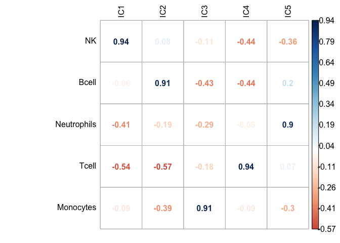
And even better accuracy can be obtained if we compute scores on un-logged data, actuall counts.
GSE64385.ica_scores_unlog <-
get_scores((2^GSE64385_ica$log.counts)-1, GSE64385_ica_markers_10)scores_corr_plot(GSE64385.ica_scores_unlog[,1:5],cell_prop.clean.scaled[1:5], method="number", tl.col = "black")
Blood data paired with FACS estimated proportions
Here we will use SDY420 dataset from Immport database that Aran, Hu, and Butte (2017) kindly shared with us. They contain PBMC expression data of 104 healthy patients and paired FACS proportion estimation.
#import expression data
GE_SDY420 <- read.delim("./data-raw/xCell_ImmPort/GE_SDY420.txt", row.names=1, stringsAsFactors=FALSE)dim(GE_SDY420)
#> [1] 12027 104summary(GE_SDY420)[,1:3]
#> SUB137169 SUB137172 SUB137208
#> Min. : 5.840 Min. : 4.099 Min. : 4.140
#> 1st Qu.: 6.254 1st Qu.: 6.211 1st Qu.: 6.083
#> Median : 6.716 Median : 6.742 Median : 7.137
#> Mean : 7.335 Mean : 7.335 Mean : 7.336
#> 3rd Qu.: 7.982 3rd Qu.: 8.041 3rd Qu.: 8.278
#> Max. :15.059 Max. :15.664 Max. :15.216In order to define number of components we can perform doICABatch that scans an array of decompositions looking for the most reproducible ones. The methodology was published in (Kairov et al. 2017).
The function saves on the disk all the studied decomposition and generates plots of stability.
GE_SDY420_batch.res<-doICABatch(GE_SDY420,
seq(2,100,1),
names = row.names(GE_SDY420),
samples = colnames(GE_SDY420))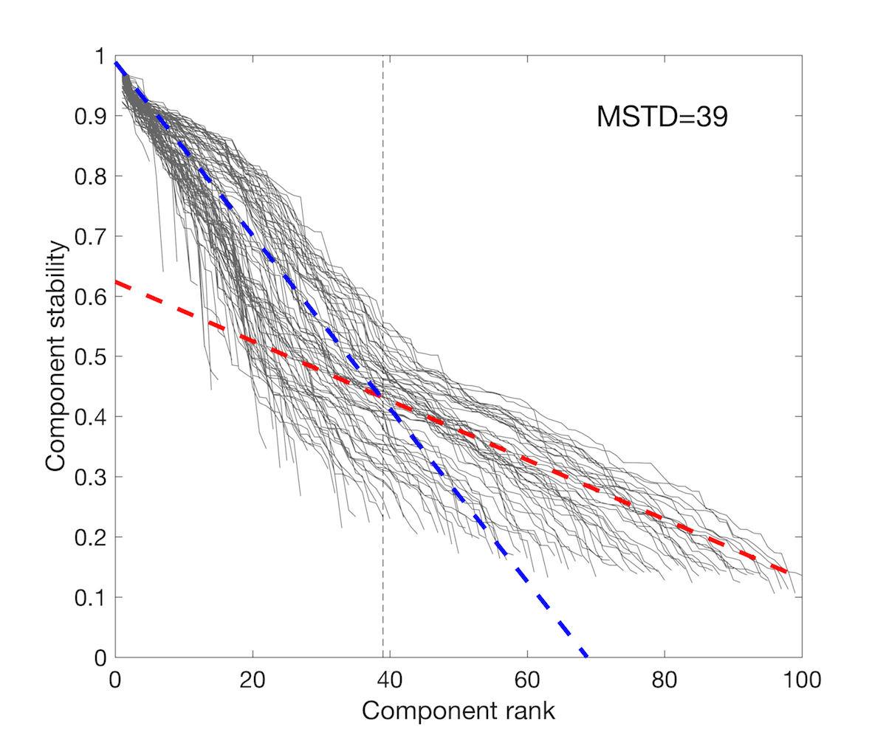 
The MST = 39 indicates most reproducible number of components. Let’s verify if among 39 components we find components associated with the immune cells.
You can load the file with decomposition from data-vignettesrepo.
GE_SDY420_ica_39 <- run_fastica (
GE_SDY420,
gene.names = row.names(GE_SDY420),
samples = colnames(GE_SDY420),
overdecompose = FALSE,
with.names = FALSE,
n.comp = 39,
R = FALSE
)Then we perform our pipeline comparing to pure immune profiles from (Newman et al. 2015).
GE_SDY420_ica_39.corr.LM22 <-
correlate_metagenes (GE_SDY420_ica_39$S, GE_SDY420_ica_39$names, metagenes = LM22.list)
GE_SDY420_ica_39.corr.LM22.p <-
radar_plot_corr(GE_SDY420_ica_39.corr.LM22,
ax.size = 12,
size.el.txt = 22,
point.size = 7)GE_SDY420_ica_39.corr.LM22.p$p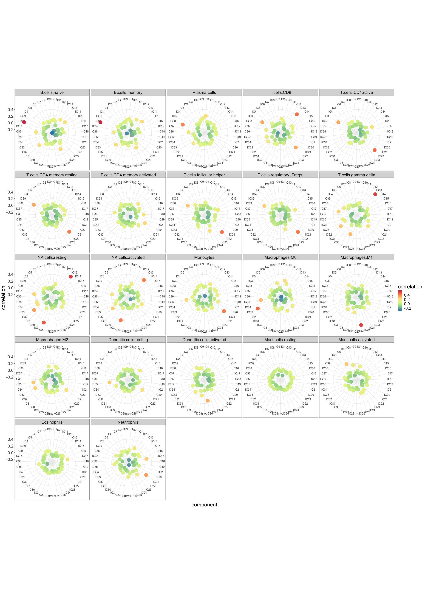
GE_SDY420_ica_39.LM22.reciprocal.corr <-
assign_metagenes(GE_SDY420_ica_39.corr.LM22$r, exclude_name = NULL)
#> no profiles to exlude provided
#> DONEknitr::kable(GE_SDY420_ica_39.LM22.reciprocal.corr, row.names = FALSE)| profile | component |
|---|---|
| B.cells.naive | IC38 |
| T.cells.CD4.naive | IC22 |
| T.cells.CD4.memory.activated | IC20 |
| NK.cells.resting | IC13 |
| Monocytes | IC21 |
| Macrophages.M0 | IC33 |
| Macrophages.M1 | IC26 |
| Mast.cells.activated | IC6 |
GE_SDY420_ica_39.LM22.max.corr <- get_max_correlations(GE_SDY420_ica_39.corr.LM22)knitr::kable(GE_SDY420_ica_39.LM22.max.corr, row.names = FALSE)| TYPE | IC | r | p.val |
|---|---|---|---|
| B.cells.naive | IC38 | 0.5965356 | 0.0000000 |
| B.cells.memory | IC38 | 0.5892516 | 0.0000000 |
| Plasma.cells | IC38 | 0.3934263 | 0.0000000 |
| T.cells.CD8 | IC13 | 0.4378895 | 0.0000000 |
| T.cells.CD4.naive | IC22 | 0.4459369 | 0.0000000 |
| T.cells.CD4.memory.resting | IC22 | 0.4117528 | 0.0000000 |
| T.cells.CD4.memory.activated | IC20 | 0.2510106 | 0.0000035 |
| T.cells.follicular.helper | IC22 | 0.4280154 | 0.0000000 |
| T.cells.regulatory..Tregs. | IC22 | 0.4187166 | 0.0000000 |
| T.cells.gamma.delta | IC13 | 0.5383511 | 0.0000000 |
| NK.cells.resting | IC13 | 0.5429902 | 0.0000000 |
| NK.cells.activated | IC29 | 0.4101813 | 0.0000000 |
| Monocytes | IC21 | 0.4123837 | 0.0000000 |
| Macrophages.M0 | IC33 | 0.4538960 | 0.0000000 |
| Macrophages.M1 | IC26 | 0.5301073 | 0.0000000 |
| Macrophages.M2 | IC35 | 0.2675745 | 0.0000007 |
| Dendritic.cells.resting | IC35 | 0.2671913 | 0.0000008 |
| Dendritic.cells.activated | IC26 | 0.3215513 | 0.0000000 |
| Mast.cells.resting | IC17 | 0.0898357 | 0.1017364 |
| Mast.cells.activated | IC6 | 0.2701451 | 0.0000006 |
| Eosinophils | IC17 | 0.1723216 | 0.0015973 |
| Neutrophils | IC21 | 0.3548045 | 0.0000000 |
Both reciprocal and maximal correlations indicate a set of components that can be labelled as immune cells. Let’s verify if we can use them to estimate proportions of those cell types.
SDY420_markers_10 <-
generate_markers(
df = GE_SDY420_ica_39,
n = 10,
sel.comp = as.character(unique(GE_SDY420_ica_39.LM22.max.corr$IC)),
return = "gene.list"
)GE_SDY420_ica_39_scores <-
get_scores ((2 ^ GE_SDY420_ica_39$log.counts) - 1,
SDY420_markers_10,
summary = "mean",
na.rm = TRUE
)head(GE_SDY420_ica_39_scores)
#> IC38 IC13 IC22 IC20 IC29 IC21
#> SUB137169 1030.7341 1336.840 1832.286 155.9163 899.3425 1074.8662
#> SUB137172 1818.6165 1123.062 1374.354 157.4036 960.5435 2927.9662
#> SUB137208 1118.0113 1350.213 1465.132 150.7131 906.9577 1234.6859
#> SUB137209 981.7916 1427.991 1705.373 158.0823 926.9521 969.4372
#> SUB137220 1010.8262 2430.426 1655.813 179.0462 1037.9035 950.5174
#> SUB137224 794.8479 1296.308 1484.678 160.0176 1016.9566 701.2229
#> IC33 IC26 IC35 IC17 IC6
#> SUB137169 1261.044 393.0449 604.0954 123.63160 1232.1581
#> SUB137172 1011.749 710.6023 1531.9271 69.45387 3012.6474
#> SUB137208 1687.398 523.3801 594.8693 843.23650 619.2452
#> SUB137209 1032.434 1021.3100 454.9859 183.05840 4064.6511
#> SUB137220 1351.556 436.3534 594.5121 70.55523 1287.1568
#> SUB137224 1490.662 415.4843 438.7275 116.07239 732.3497As we have FACS mesured proprtions we can import them.
#import facs estimated proportions
FACS_SDY420 <- read.delim("../data-raw/xCell_ImmPort/FCS_SDY420.txt", row.names=1, stringsAsFactors=FALSE)dim(FACS_SDY420)
#> [1] 24 104common.samples <- intersect(colnames(FACS_SDY420), colnames(GE_SDY420))
length(common.samples)
#> [1] 104FACS_SDY420.fil <- data.frame(t(FACS_SDY420[, common.samples]))head(FACS_SDY420.fil)[,1:4]
#> B.cells CD16..monocytes CD16..monocytes.1 CD4..T.cells
#> SUB137169 0.0710 0.1430 0.0080 0.4138
#> SUB137172 0.1342 0.1695 0.0155 0.2014
#> SUB137208 0.1344 0.2324 0.0101 0.2301
#> SUB137209 0.0858 0.2006 0.0114 0.2718
#> SUB137220 0.0493 0.1600 0.0089 0.2618
#> SUB137224 0.0626 0.1663 0.0136 0.3320And we can confront the aboundance scores.
scores_corr_plot(GE_SDY420_ica_39_scores,FACS_SDY420.fil, tl.col = "black")knitr::include_graphics("./figures-ext/CorrBlood.jpeg")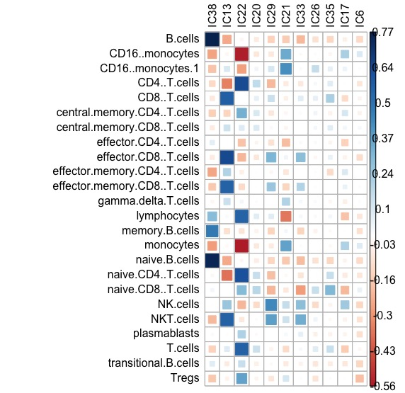
The estimation of aboundance gives remarquable accuracy (Pearson correlation coefficient):
- IC38: B-cells: 0.76
- CD4 T-cells: 0.629
- CD8 T-cells: 0.63
- NK: 0.43
- Monocytes: 0.42
This results is also highly comparable with (or even better than) results obtained with other tools, published in xCell publication by Aran, Hu, and Butte (2017).
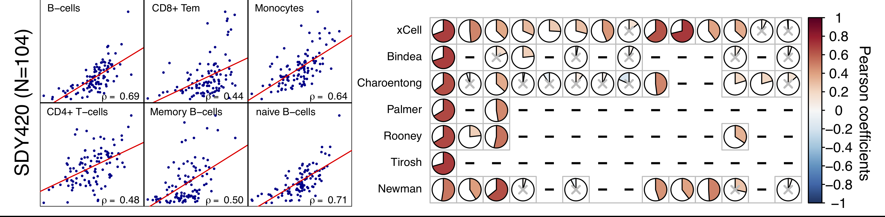
Overview of functions
In this section we will discuss main functions of the package and their different options on computationally light toy examples. If you are interested in demo application of deconICA with biological arguments go straight to section Demonstration of DeconICA package
You can use run_fastica() function to decompose a matrix into independent components
S <- matrix(runif(10000), 5000, 2)
A <- matrix(c(1, 1, -1, 3), 2, 2, byrow = TRUE)
X <- data.frame(S %*% A)
res <- run_fastica(X = X, row.center = TRUE, n.comp = 2, overdecompose = FALSE)
#> running PCA
#> running ICA for 2 components
#> adding names to the object
#> adding sample names to the object
#> adding counts in log to the object
str(res)
#> List of 8
#> $ X : num [1:5000, 1:2] 0.989 1.337 1.133 -1.105 -1.281 ...
#> $ K : num [1:2, 1:2] -1.22 -6.69e-16 -9.93 1.81e+16
#> $ W : num [1:2, 1:2] 0.0137 0.9999 -0.9999 0.0137
#> $ A : num [1:2, 1:2] -Inf Inf NaN NaN
#> ..- attr(*, "dimnames")=List of 2
#> .. ..$ : chr [1:2] "IC1" "IC2"
#> .. ..$ : chr [1:2] "X1" "X2"
#> $ S : num [1:5000, 1:2] 0.105 -0.103 0.178 0.885 2.639 ...
#> ..- attr(*, "dimnames")=List of 2
#> .. ..$ : chr [1:5000] "X1" "X2" "X3" "X4" ...
#> .. ..$ : chr [1:2] "IC1" "IC2"
#> $ names : chr [1:5000] "X1" "X2" "X3" "X4" ...
#> $ samples : chr [1:2] "X1" "X2"
#> $ log.counts:'data.frame': 5000 obs. of 2 variables:
#> ..$ X1: num [1:5000] 0.8349 0.1645 0.885 -0.0892 -0.8865 ...
#> ..$ X2: num [1:5000] 1.425 0.262 1.272 3.462 2.914 ...run_fastica runs fastica from fastica package. In this trival example we create sources matrix Sand mixing matrix A that we multuply to obtain X. Then we decompose X into n.comp = 2, with row centering (substracting mean from each row) row.center = TRUE. We also checked overdecompose = FALSE, overdecompose = TRUE would ignore number of components we defined with ncomp. It finds its use for more advanced analysis applied to transcriptome [see section ####]. Other parameters were selected as default.
Full description of the run_fastica parameters can be found in help ?run_fastica.
The main differences between run_fastica and fastica are:
- if column names are provided with the matrix, duplicated names are removed and entries with higher variance are kept
- it transforms data into log2 if data are in row counts
- it runs a PCA before ICA to denoise the matrix
- it allows running matlab version fastica with icasso stabilisation if matlab software is installed on your machine (more about this point in vignette: running fastICA with icasso stabilisation)
- it returns in a
list- input
data.framewithout duplicated entries and before log transformation:log.counts namesrow names vectorsamplessample names vectorA,S,KandWmatrices (see?run_fasticafor details) if run inR=TRUEAandSmatrices if run withR=FALSE
- input
overdecomposeparameter that selects number of composed needed to perform overdecomposition of the input matrix
Therefore, run_fastica() performs ICA decomposition of the matrix and provides additional features usefull for the downstream analysis. The use of more advanced options will be demonstrated later on in this tutorial. It generates components or sources to which we will refer later on in the tutorial.
The step naturally following run_fastica() is correlate_metagenes().
It is common that after an unsuperivsed decomposition, components should have attributed an interpretation or a meaning or a label. We call this process interpret components or identify sources. A domain knowledge is necessary to interpret components. In the case of transcriptomic data, components can be seen as weighted gene list.
An efficient way to in intrpret a component is to use correlation with some known profile or as we call it a metagene. If we dispose of a known weighted list of genes that characterize a biological phenomena or a cell type (a metagene), we can then correlate them with obtained components and verify is some of decomposed sources are close to the known cells/functions.
In our deconICA pipeline correlate_metagenes() can be used in order to correlate metagenes (gene lists: knowlege-based or data-driven) with the data-driven components.
data(Example_ds)
#decompose the matrix
set.seed(123)
res_run_ica <- run_fastica (
Example_ds,
overdecompose = FALSE,
with.names = TRUE,
n.comp = 10
)
#> running PCA
#> running ICA for 10 components
#> adding names to the object
#> adding sample names to the object
#> adding counts in log to the object
#correlate with Biton et al. metagenes
corr <- correlate_metagenes(S = res_run_ica$S,
gene.names = res_run_ica$names,
metagenes = Biton.list
)In this case we use an example of an extract, of 60 samples, from transcriptomic data from breast cancer (Bekhouche et al. 2011). At first, dataset is decomposed into an arbitrary number of 10 components. The correlate_metagenes() correlates the obtained S matrix with Biton et al. metagenes (Biton et al. 2014). This set of 11 metagens is data-driven and was derived in the article Biton et al. (2014) from pan-cancer transcriptome as the reproducible signals, common to many cancer types. Some of the signatures as BCLAPATHWAYS or UROTHELIALDIF (urothelialdifferentiation) were shared amond many datasets, but within bladder cancer. They can bees as a sort of negative control.
However, any set weighted signatures with reasonable size can be used as metagenes. Later in this tutorial we use immune cell profiles optimized for cell type deconvolution from (Newman et al. 2015) LM22.list.
One can controle a minimal number of genes used for correlation with n.genes.intersect it is set to a magic number in statistics (30) by default.
names(corr)
#> [1] "S.or" "n" "r" "P"The correlate_metagenes() returns n, r, P matrices which correspond to Hmisc::rcorr function output, number of genes on which correlation is based, correlation coefficient and p-value.
The S.or stands for S matrix that is oriented. Why the matrix should be oriented? If you used ICA to decompose gene expression then the positive and negative projections do not have meaning by itself. We developed a methodology orienting data in the direction of the long tail of the distribution. Which means highest absolute values of a component weight should be positive. However, if the distribution doesn’t have tails and is close to gaussian, an alternative, can be orienting components through maximal correlation. If we are confident with our metagenes, we can orient the S matrix so that the maximal correlation is always postive. We demontrate the use of orient.max = FALSE and obtained S.orin use cases section. One can decide not to orient the S matrix through selecting orient.long = FALSE and orient.max = FALSE.
If we have a look at r matrix, we see, indeed, it contains correlations between components and provided metagenes.
head(corr$r)
#> M12_MYOFIBROBLASTS M13_BLCAPATHWAYS M14_STRESS M2_GC_CONTENT
#> IC1 5.241598e-03 0.11551181 -0.05863261 0.001829696
#> IC2 3.872262e-02 0.05786138 0.11436405 0.006144067
#> IC3 8.789440e-02 0.02586692 -0.01506925 -0.027817853
#> IC4 7.534325e-01 -0.02125887 0.22186764 0.062138866
#> IC5 -1.393165e-05 -0.13490904 -0.02972322 -0.001664296
#> IC6 1.442049e-02 0.04582809 0.01508958 -0.189164862
#> M3_SMOOTH_MUSCLE M4_MITOCHONRIA_TRANSLATION M5_INTERFERON M6_BASALLIKE
#> IC1 0.28082149 -0.20320196 -0.138082269 -0.02895456
#> IC2 0.04300946 -0.05986897 -0.103115638 0.07220367
#> IC3 -0.01987917 -0.16167704 -0.061727219 0.10881091
#> IC4 0.44002012 -0.14025239 0.003064779 -0.04316638
#> IC5 -0.16530245 0.02677519 0.156166568 0.07481530
#> IC6 -0.04016218 0.34503586 0.023152228 0.04141703
#> M7_CELLCYCLE M8_IMMUNE M9_UROTHELIALDIFF
#> IC1 -0.275278283 0.042007208 -0.007860347
#> IC2 -0.173358489 -0.004013247 -0.026667308
#> IC3 0.123241033 0.093491330 0.037031845
#> IC4 -0.149189096 -0.044283111 -0.084404694
#> IC5 0.603076352 -0.030319023 -0.001772235
#> IC6 0.005530295 0.101156377 -0.017695373These correlation matrix can be visualized in many ways. We propose a radar plot to evaluate quickly if there is a good match between metagenes and components. In this representation, we focus on positive correlations that have red color and placed away from the center of the circle (radar). We can see which component is attributed to the highest correlation for each metagene.
p <- radar_plot_corr(corr, size.el.txt = 10, point.size = 2)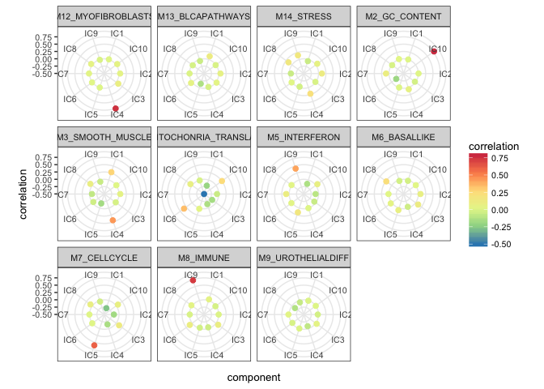
The function radar_plot_corr() returns as well the matrix in long format suitable for ggplot2 plots in case you want to use a different type of visualization.
head(p$df)
#> component correlation metagene
#> 1 IC1 5.241598e-03 M12_MYOFIBROBLASTS
#> 2 IC2 3.872262e-02 M12_MYOFIBROBLASTS
#> 3 IC3 8.789440e-02 M12_MYOFIBROBLASTS
#> 4 IC4 7.534325e-01 M12_MYOFIBROBLASTS
#> 5 IC5 -1.393165e-05 M12_MYOFIBROBLASTS
#> 6 IC6 1.442049e-02 M12_MYOFIBROBLASTSIn order to zoom in into a correlation with a specific metagene, one can use a function lolypop_plot_corr()
Here we can visualize for example SMOOTH_MUSCLE metagene that seems a bit unbigous.
lolypop_plot_corr(corr$r,"M3_SMOOTH_MUSCLE")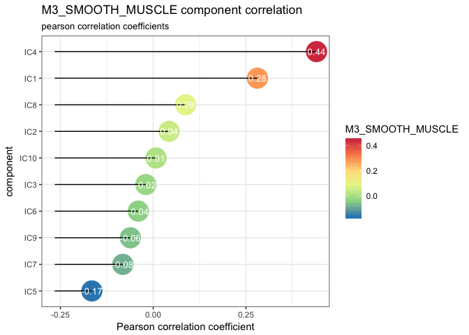
We can observe that the highest correlation is with IC4 0.44 but IC1: 0.28 is close as well. These two components may represent two diffrent types of functions or cells reated to muscles.
However, if we look at IMMUNE metagene, we can select one strongly correlated component: IC9, Pearson correlation coefficient equal to 0.73.
lolypop_plot_corr(corr$r,"M8_IMMUNE")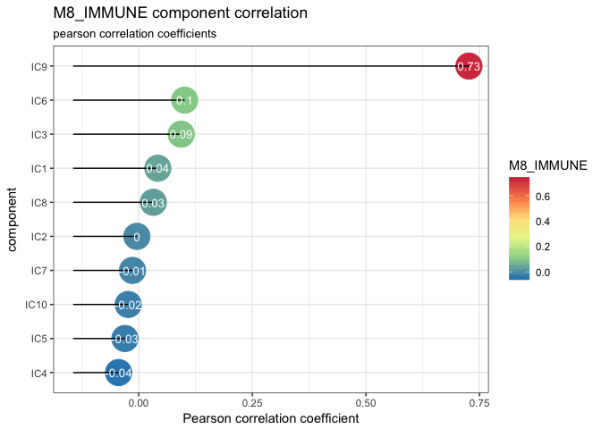
In case we have many profiles, an outomatic extraction of corresponding pairs metagene - component is handy.
A natural way is consider the component which Pearson correlation coefficient is highest as the one corresponding to a metagene. You can use get_max_correlations() to retreive this information from the correlation matrix.
# retreive max correlations
max.corr <- get_max_correlations(corr)
# order
max.corr.ordered <- max.corr[order(-max.corr$r),]
# show table
kable(max.corr.ordered,"html", row.names = FALSE)| TYPE | IC | r | p.val |
|---|---|---|---|
| M2_GC_CONTENT | IC10 | 0.7812173 | 0.0000000 |
| M12_MYOFIBROBLASTS | IC4 | 0.7534325 | 0.0000000 |
| M8_IMMUNE | IC9 | 0.7266403 | 0.0000000 |
| M7_CELLCYCLE | IC5 | 0.6030764 | 0.0000000 |
| M3_SMOOTH_MUSCLE | IC4 | 0.4400201 | 0.0000000 |
| M5_INTERFERON | IC9 | 0.4092376 | 0.0000000 |
| M4_MITOCHONRIA_TRANSLATION | IC6 | 0.3450359 | 0.0000000 |
| M6_BASALLIKE | IC8 | 0.2297117 | 0.0000000 |
| M14_STRESS | IC4 | 0.2218676 | 0.0000000 |
| M13_BLCAPATHWAYS | IC1 | 0.1155118 | 0.0000000 |
| M9_UROTHELIALDIFF | IC3 | 0.0370318 | 0.0002561 |
get_max_correlations() provides pearson correlation r column and the p-valye p.val to help decide if the maximal correlation can be used as labelling. One can decide on minimal threshold, or p-value to take a decision.
Another way to assign maetagene to a component can be trough reciprocal correlations. This method was used in our research articles [Becht et al. (2016); RBH_paper]. In brief, given correlations between the set of metagenes \(M=\{M_{1},...,M_{m}\}\) and \(S\) matrix \(S=\{IC_{1},...,IC_{N}\}\), if \(S_{i}=argmax_k(corr(M_{j},S_{k}))\) and \(A_{j}=argmax_k (corr(S_{i},M_{k}))\), then \(S_{i}\) and \(M_{j}\) are reciprocal. This approach is usefull with assumption that there should be one component corresponding to a metagene and one metagene corresponding to a component.
# retreive reciprocal correlations
reciprocal.corr <- assign_metagenes(corr$r, exclude_name = NULL)
#> no profiles to exlude provided
#> DONE
# show table
kable(reciprocal.corr, "html",row.names = FALSE)| profile | component |
|---|---|
| M12_MYOFIBROBLASTS | IC4 |
| M2_GC_CONTENT | IC10 |
| M4_MITOCHONRIA_TRANSLATION | IC6 |
| M6_BASALLIKE | IC8 |
| M7_CELLCYCLE | IC5 |
| M8_IMMUNE | IC9 |
Here the correspondiing pairs do not follow a speciic order. The six of components find a reciprocal match.
Full pipeline example
Decompose data
In order to fully explore a dataset with identification and quantification of immune-related signals we suggest to over decompose the data matrix.
We recommand to use for this purpose MATLAB implementation of the algorithm (see vignette: MATLAB..)
One can run it like this on BEK complete data (WARNING: requires MATLAB and take a few minutes):
BEK_ica_overdecompose <- run_fastica (
BEK,
isLog = FALSE,
overdecompose = TRUE,
with.names = FALSE,
gene.names = row.names(BEK),
R = FALSE
)In order to follow this tutorial simply load precomputed ICA decomposition.
data(BEK_ica_overdecompose)Interpret components
# correlate with Biton et al. metagenes
corr_Biton <- correlate_metagenes(S = BEK_ica_overdecompose$S,
gene.names = BEK_ica_overdecompose$names,
metagenes = Biton.list
)
# correlate with LM22 cell profiles
corr_LM22 <- correlate_metagenes(S = BEK_ica_overdecompose$S,
gene.names = BEK_ica_overdecompose$names,
metagenes = LM22.list
)We can illustrate correlations with reference metagenes…
radar_plot_corr(corr_Biton, size.el.txt = 10, point.size = 2)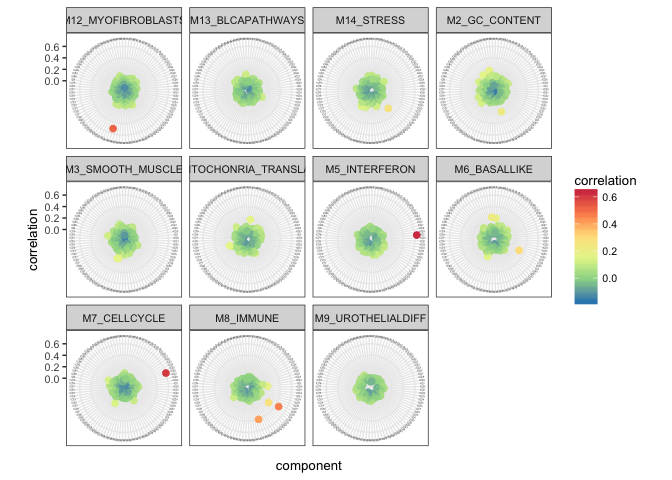
… and with LM22 immune cell type profiles.
radar_plot_corr(corr_LM22, size.el.txt = 10, point.size = 2)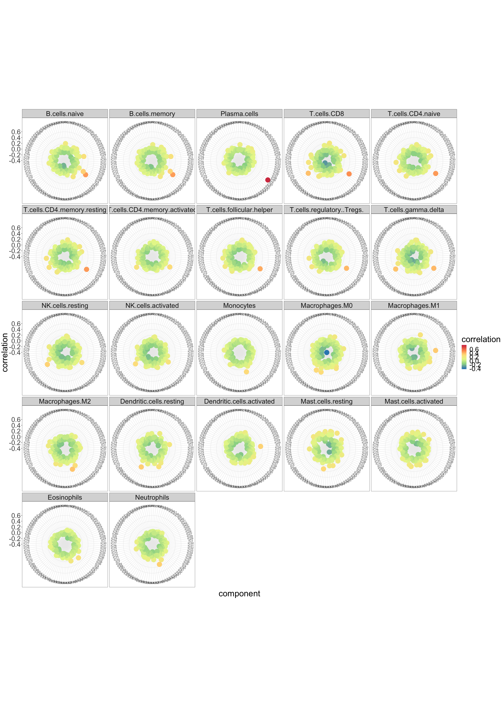
And zoom in the M8_IMMUNE metagene.
lolypop_plot_corr(corr_Biton$r,"M8_IMMUNE")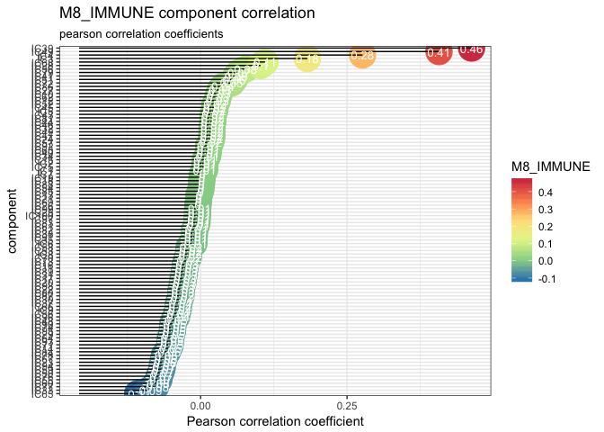
As we have several components corresponding to the M8_IMMUNE and a few matches with immune profiles. One can use enrichment test to confirm this results.
First we run reciprocal assignement so that we can exclude from immune signals the confounders as, for example, cell cycle.
reciprocal.corr.Biton <-
assign_metagenes(corr_Biton$r, exclude_name = c("M8_IMMUNE", "M2_GC_CONTENT"))
#> profiles excluded
#> DONE
immune.components <-
identify_immune_comp(corr_Biton$r[, "M8_IMMUNE"], reciprocal.corr.Biton$component)Five components pass the threshold of >0.1 pearson correlation with the IMMUNE component.
immune.components
#> IC4 IC28 IC39 IC49 IC68
#> 0.2763554 0.1023885 0.4624926 0.4070063 0.1100752We can verify to which cells they may correspond through enrichment test (based on Fisher exact test).
enrichment.immune <- gene_enrichment_test(
BEK_ica_overdecompose$S,
BEK_ica_overdecompose$names,
immune.ics = names(immune.components),
alternative = "greater",
p.adjust.method = "BH",
p.value.threshold = 0.05
)
#> 58 modules higher than threshold: 500
#> Warning in gene_enrichment_test(BEK_ica_overdecompose$S,
#> BEK_ica_overdecompose$names, : Small overlap between provided gene list and
#> gmt signatures: 5450/21320
#> saving metagenes
#> extracting top genes
#>
#> running enrichment for: IC4
#> correcting p.values
#> applying p.value.threshold
#> running enrichment for: IC28
#> correcting p.values
#> applying p.value.threshold
#> running enrichment for: IC39
#> correcting p.values
#> applying p.value.threshold
#> running enrichment for: IC49
#> correcting p.values
#> applying p.value.threshold
#> running enrichment for: IC68
#> correcting p.values
#> applying p.value.threshold
#>
#> DONEnames(enrichment.immune)
#> [1] "metagenes" "genes.list" "enrichment"Output of gene_enrichment_test() is a list of three different elements for each component passing fixed p-value threshold. metagenes is a weighted list of top n genes, genes.list is character vector of top n genes and enrichmentis enrichment test result
enrichment.immune$metagenes$IC4[1:10,]
#> gene.names IC4
#> IGLV1-44 IGLV1-44 29.53511
#> JCHAIN JCHAIN 23.49211
#> IGKV1D-13 IGKV1D-13 22.57536
#> IGLJ3 IGLJ3 22.20133
#> IGHM IGHM 20.92393
#> POU2AF1 POU2AF1 20.50039
#> IGLV@ IGLV@ 20.45265
#> IGLC1 IGLC1 20.42825
#> IGH IGH 20.20349
#> IGHD IGHD 19.02722enrichment.immune$genes.list$IC4[1:10]
#> [1] "JCHAIN" "POU2AF1" "FAM46C" "MZB1" "SLAMF7" "CD38" "IRF4"
#> [8] "CD79A" "SEL1L3" "CXCL9"kable(enrichment.immune$enrichment$IC4[1:3,], "html", row.names = FALSE) %>%
kable_styling(font_size = 8)| module | module_size | nb_genes_in_module | genes_in_module | universe_size | nb_genes_in_universe | p.value | p.value.corrected | test |
|---|---|---|---|---|---|---|---|---|
| gamma.delta.T.cells | 926 | 22 | JCHAIN POU2AF1 FAM46C MZB1 SLAMF7 CD38 IRF4 CD79A SEL1L3 CXCL9 AMPD1 CD27 PDK1 RBP1 LAX1 PIM2 CHI3L1 CYTIP RASSF6 UBD LTF CCL5 | 5723 | 5450 | 5.52377910001422e-17 | 0 | greater |
| alpha.beta.T.cells | 432 | 21 | JCHAIN POU2AF1 FAM46C MZB1 SLAMF7 CD38 IRF4 CD79A SEL1L3 CXCL9 AMPD1 CD27 PDK1 RBP1 LAX1 PIM2 CHI3L1 CYTIP RASSF6 UBD LTF | 5723 | 5450 | 3.34922808722385e-16 | 0 | greater |
| Myeloid.Cells | 952 | 21 | JCHAIN POU2AF1 FAM46C MZB1 SLAMF7 CD38 IRF4 CD79A SEL1L3 CXCL9 AMPD1 CD27 PDK1 RBP1 LAX1 PIM2 CHI3L1 CYTIP RASSF6 UBD LTF | 5723 | 5450 | 3.34922808722385e-16 | 0 | greater |
If you use ImmgenHUGO list of signatures, cell_voting_immgen()can be used to summarise results.
kable(
cell_voting_immgen(enrichment.immune$enrichment)$IC4,
"html",
row.names = FALSE,
caption = "IC4"
)| cell.type | vote |
|---|---|
| NK.cells | 68.21 % |
| gamma.delta.T.cells | 20.84 % |
| alpha.beta.T.cells | 8.27 % |
| Myeloid.Cells | 2.68 % |
kable(
cell_voting_immgen(enrichment.immune$enrichment)$IC28,
"html",
row.names = FALSE,
caption = paste("IC28")
)| cell.type | vote |
|---|---|
| Stromal.Cells | 75.22 % |
| B.cells | 15.91 % |
| Myeloid.Cells | 8.87 % |
kable(
cell_voting_immgen(enrichment.immune$enrichment)$IC39,
"html",
row.names = FALSE,
caption = paste("IC39")
)| cell.type | vote |
|---|---|
| gamma.delta.T.cells | 71.58 % |
| alpha.beta.T.cells | 28.42 % |
kable(
cell_voting_immgen(enrichment.immune$enrichment)$IC49,
"html",
row.names = FALSE,
caption = paste("IC49")
)| cell.type | vote |
|---|---|
| Myeloid.Cells | 100 % |
kable(
cell_voting_immgen(enrichment.immune$enrichment)$IC68,
"html",
row.names = FALSE,
caption = paste("IC68")
)| cell.type | vote |
|---|---|
| gamma.delta.T.cells | 57.6 % |
| Stromal.Cells | 23.56 % |
| alpha.beta.T.cells | 11.43 % |
| Myeloid.Cells | 7.41 % |
This result is not trivial to interpret.
A different .gmt can be also used to perform the entichment anamysis
We can import for example signature genes from TIMER (Li et al. 2016)
setwd(path.package("deconica", quiet = TRUE))
TIMER <-
ACSNMineR::format_from_gmt("./data-raw/TIMER_cellTypes.gmt")enrichment.immune <- gene_enrichment_test(
BEK_ica_overdecompose$S,
BEK_ica_overdecompose$names,
immune.ics = names(immune.components),
gmt = TIMER,
alternative = "greater",
p.adjust.method = "BH",
p.value.threshold = 0.05
)
#> 1 modules higher than threshold: 500
#> Warning in gene_enrichment_test(BEK_ica_overdecompose$S,
#> BEK_ica_overdecompose$names, : Small overlap between provided gene list and
#> gmt signatures: 673/21320
#> saving metagenes
#> extracting top genes
#>
#> running enrichment for: IC4
#> correcting p.values
#> applying p.value.threshold
#> running enrichment for: IC28
#> correcting p.values
#> applying p.value.threshold
#> running enrichment for: IC39
#> correcting p.values
#> applying p.value.threshold
#> running enrichment for: IC49
#> correcting p.values
#> applying p.value.threshold
#> running enrichment for: IC68
#> correcting p.values
#> applying p.value.threshold
#>
#> DONEkable(enrichment.immune$enrichment$IC4, "html", row.names = FALSE, caption = "IC4") %>%
kable_styling(font_size = 8)| module | module_size | nb_genes_in_module | genes_in_module | universe_size | nb_genes_in_universe | p.value | p.value.corrected | test |
|---|---|---|---|---|---|---|---|---|
| Lymphoid | 234 | 41 | POU2AF1 TNFRSF17 FCRL5 CD79A AMPD1 CD27 PDK1 PIM2 CHI3L1 CPNE5 PNOC FKBP11 IDO1 CD2 CXCL11 CEP128 ELL2 EAF2 CD8A MANEA ITK MMP12 LCK CCND2 CYP1B1 NLRC3 TFPI2 GZMK CD274 UBE2J1 GZMA MS4A1 CD19 KLF12 CCL19 EOMES AIM2 FAM30A HSPA13 NKG7 SDF2L1 | 924 | 673 | 7.9891782953872e-33 | 0.0000000 | greater |
| B Cell | 91 | 22 | POU2AF1 TNFRSF17 FCRL5 CD79A AMPD1 CD27 PDK1 PIM2 CHI3L1 CPNE5 PNOC FKBP11 IDO1 CD2 CXCL11 CEP128 ELL2 EAF2 CD8A MANEA ITK MMP12 | 924 | 673 | 5.52377910001422e-17 | 0.0000000 | greater |
| Myeloid | 344 | 18 | POU2AF1 TNFRSF17 FCRL5 CD79A AMPD1 CD27 PDK1 PIM2 CHI3L1 CPNE5 PNOC FKBP11 IDO1 CD2 CXCL11 CEP128 ELL2 EAF2 | 924 | 673 | 7.01437884551178e-14 | 0.0000000 | greater |
| T Cell | 76 | 10 | POU2AF1 TNFRSF17 FCRL5 CD79A AMPD1 CD27 PDK1 PIM2 CHI3L1 CPNE5 | 924 | 673 | 7.04213335186756e-08 | 0.0000002 | greater |
| Multiple | 795 | 9 | POU2AF1 TNFRSF17 FCRL5 CD79A AMPD1 CD27 PDK1 PIM2 CHI3L1 | 924 | 673 | 3.79965656677689e-07 | 0.0000007 | greater |
| Dendritic Cell | 70 | 5 | POU2AF1 TNFRSF17 FCRL5 CD79A AMPD1 | 924 | 673 | 0.000294962142828159 | 0.0003792 | greater |
| Neutrophil | 45 | 5 | POU2AF1 TNFRSF17 FCRL5 CD79A AMPD1 | 924 | 673 | 0.000294962142828159 | 0.0003792 | greater |
| Monocyte | 82 | 3 | POU2AF1 TNFRSF17 FCRL5 | 924 | 673 | 0.00780838786005748 | 0.0087844 | greater |
kable(enrichment.immune$enrichment$IC28, "html", row.names = FALSE, caption = "IC28") %>%
kable_styling(font_size = 8)| module | module_size | nb_genes_in_module | genes_in_module | universe_size | nb_genes_in_universe | p.value | p.value.corrected | test |
|---|---|---|---|---|---|---|---|---|
| Myeloid | 344 | 31 | MMP12 MS4A1 SPIB MMP9 CXCL5 SGPP2 BCL11A KRT23 P2RX5 CHI3L1 CYP1B1 WNT5A IL32 CD19 RASSF4 POU2AF1 NRIP3 CD1A BCL2A1 ACP5 FCMR SERPINB2 CCL19 IRAK2 GPR18 FCRL5 KYNU ARL4C STAP1 TRIM59 NLRP7 | 924 | 673 | 3.02686371304923e-24 | 0.0000000 | greater |
| Lymphoid | 234 | 24 | MMP12 MS4A1 SPIB MMP9 CXCL5 SGPP2 BCL11A KRT23 P2RX5 CHI3L1 CYP1B1 WNT5A IL32 CD19 RASSF4 POU2AF1 NRIP3 CD1A BCL2A1 ACP5 FCMR SERPINB2 CCL19 IRAK2 | 924 | 673 | 1.45504141446656e-18 | 0.0000000 | greater |
| B Cell | 91 | 20 | MMP12 MS4A1 SPIB MMP9 CXCL5 SGPP2 BCL11A KRT23 P2RX5 CHI3L1 CYP1B1 WNT5A IL32 CD19 RASSF4 POU2AF1 NRIP3 CD1A BCL2A1 ACP5 | 924 | 673 | 2.00953685233431e-15 | 0.0000000 | greater |
| Monocyte | 82 | 11 | MMP12 MS4A1 SPIB MMP9 CXCL5 SGPP2 BCL11A KRT23 P2RX5 CHI3L1 CYP1B1 | 924 | 673 | 1.29345306462873e-08 | 0.0000000 | greater |
| Dendritic Cell | 70 | 10 | MMP12 MS4A1 SPIB MMP9 CXCL5 SGPP2 BCL11A KRT23 P2RX5 CHI3L1 | 924 | 673 | 7.04213335186756e-08 | 0.0000001 | greater |
| Multiple | 795 | 10 | MMP12 MS4A1 SPIB MMP9 CXCL5 SGPP2 BCL11A KRT23 P2RX5 CHI3L1 | 924 | 673 | 7.04213335186756e-08 | 0.0000001 | greater |
| T Cell | 76 | 5 | MMP12 MS4A1 SPIB MMP9 CXCL5 | 924 | 673 | 0.000294962142828159 | 0.0003792 | greater |
kable(enrichment.immune$enrichment$IC39, "html", row.names = FALSE, caption = "IC39") %>%
kable_styling(font_size = 8)| module | module_size | nb_genes_in_module | genes_in_module | universe_size | nb_genes_in_universe | p.value | p.value.corrected | test |
|---|---|---|---|---|---|---|---|---|
| Lymphoid | 234 | 50 | MS4A1 CCL19 FCRL3 MMP9 GPR18 EOMES NLRC3 GZMK BCL11B ITK LCK FCMR CD2 TCL1A TMC8 CD19 CD247 CD3E IL2RB CD3D GZMA CD27 P2RX5 CD69 POU2AF1 PTX3 CD8A GZMB RASGRP2 SPIB SAMD3 STAT4 MAP4K1 BANK1 PTPN7 ZAP70 TRAT1 TLR10 PTPRCAP FCRL1 CD79A KRT23 GNLY NKG7 MYBL1 KLRG1 RASSF2 BCL11A KLRB1 CD6 | 924 | 673 | 4.35924427142961e-41 | 0.0000000 | greater |
| T Cell | 76 | 15 | MS4A1 CCL19 FCRL3 MMP9 GPR18 EOMES NLRC3 GZMK BCL11B ITK LCK FCMR CD2 TCL1A TMC8 | 924 | 673 | 1.34198340448245e-11 | 0.0000000 | greater |
| B Cell | 91 | 13 | MS4A1 CCL19 FCRL3 MMP9 GPR18 EOMES NLRC3 GZMK BCL11B ITK LCK FCMR CD2 | 924 | 673 | 4.24516594680188e-10 | 0.0000000 | greater |
| Myeloid | 344 | 13 | MS4A1 CCL19 FCRL3 MMP9 GPR18 EOMES NLRC3 GZMK BCL11B ITK LCK FCMR CD2 | 924 | 673 | 4.24516594680188e-10 | 0.0000000 | greater |
| Multiple | 795 | 8 | MS4A1 CCL19 FCRL3 MMP9 GPR18 EOMES NLRC3 GZMK | 924 | 673 | 2.03199025092851e-06 | 0.0000037 | greater |
| Monocyte | 82 | 5 | MS4A1 CCL19 FCRL3 MMP9 GPR18 | 924 | 673 | 0.000294962142828159 | 0.0004424 | greater |
| Dendritic Cell | 70 | 4 | MS4A1 CCL19 FCRL3 MMP9 | 924 | 673 | 0.00152397107127882 | 0.0019594 | greater |
kable(enrichment.immune$enrichment$IC49, "html", row.names = FALSE, caption = "IC49") %>%
kable_styling(font_size = 8)| module | module_size | nb_genes_in_module | genes_in_module | universe_size | nb_genes_in_universe | p.value | p.value.corrected | test |
|---|---|---|---|---|---|---|---|---|
| Myeloid | 344 | 69 | FCGR3B FGL2 FCGR2B TLR8 CPVL MPEG1 CD86 CYBB TLR1 MNDA MS4A6A FPR3 CSF1R P2RX7 GGTA1P TFEC CXCL11 HLA-DRB4 NCF2 P2RY13 HCK TLR2 C5AR1 MS4A7 THEMIS2 CSF2RA CLEC5A CLEC7A KCTD12 RASSF4 IGSF6 EMILIN2 AIF1 SLAMF8 PILRA TREM2 DSE NCF4 DPYD GZMA FPR1 CPM NPL LILRB2 TNFSF13B ARHGAP18 ADAP2 STAB1 HPSE PTAFR LYN LILRB1 AP1S2 HSPA6 HMOX1 SIGLEC1 SLC15A3 CD8A KYNU DFNA5 TNFAIP2 MAN1A1 MMP1 CLIC2 CD69 XCL1 IL15 SOD2 MAFB | 924 | 673 | 9.19957214014236e-61 | 0.0000000 | greater |
| Lymphoid | 234 | 10 | FCGR3B FGL2 FCGR2B TLR8 CPVL MPEG1 CD86 CYBB TLR1 MNDA | 924 | 673 | 7.04213335186756e-08 | 0.0000002 | greater |
| Monocyte | 82 | 10 | FCGR3B FGL2 FCGR2B TLR8 CPVL MPEG1 CD86 CYBB TLR1 MNDA | 924 | 673 | 7.04213335186756e-08 | 0.0000002 | greater |
| Dendritic Cell | 70 | 9 | FCGR3B FGL2 FCGR2B TLR8 CPVL MPEG1 CD86 CYBB TLR1 | 924 | 673 | 3.79965656677689e-07 | 0.0000009 | greater |
| Multiple | 795 | 6 | FCGR3B FGL2 FCGR2B TLR8 CPVL MPEG1 | 924 | 673 | 5.66088960983336e-05 | 0.0001019 | greater |
| Neutrophil | 45 | 4 | FCGR3B FGL2 FCGR2B TLR8 | 924 | 673 | 0.00152397107127882 | 0.0022860 | greater |
kable(enrichment.immune$enrichment$IC68, "html", row.names = FALSE, caption = "IC68") %>%
kable_styling(font_size = 8)| module | module_size | nb_genes_in_module | genes_in_module | universe_size | nb_genes_in_universe | p.value | p.value.corrected | test |
|---|---|---|---|---|---|---|---|---|
| Lymphoid | 234 | 42 | PTGDR GZMB GZMK FCMR IL32 CD8A XCL2 GZMA NKG7 VCPKMT RIT1 IL2RB BCL11A ZBED2 XCL1 INHBA CD2 FCRL3 HSPA13 TNFRSF18 EOMES GNLY DUSP6 MS4A1 PLA2G7 TYMP ATP2B1 CD3D MANEA CAPG SAMD3 BTN3A2 LAG3 NLRC3 PRF1 OSBPL11 AIFM2 CCL19 SPRED2 ACER3 ZAP70 SPIB | 924 | 673 | 1.0269314148755e-33 | 0.0000000 | greater |
| Myeloid | 344 | 25 | PTGDR GZMB GZMK FCMR IL32 CD8A XCL2 GZMA NKG7 VCPKMT RIT1 IL2RB BCL11A ZBED2 XCL1 INHBA CD2 FCRL3 HSPA13 TNFRSF18 EOMES GNLY DUSP6 MS4A1 PLA2G7 | 924 | 673 | 2.32317536763567e-19 | 0.0000000 | greater |
| B Cell | 91 | 13 | PTGDR GZMB GZMK FCMR IL32 CD8A XCL2 GZMA NKG7 VCPKMT RIT1 IL2RB BCL11A | 924 | 673 | 4.24516594680188e-10 | 0.0000000 | greater |
| T Cell | 76 | 13 | PTGDR GZMB GZMK FCMR IL32 CD8A XCL2 GZMA NKG7 VCPKMT RIT1 IL2RB BCL11A | 924 | 673 | 4.24516594680188e-10 | 0.0000000 | greater |
| Dendritic Cell | 70 | 9 | PTGDR GZMB GZMK FCMR IL32 CD8A XCL2 GZMA NKG7 | 924 | 673 | 3.79965656677689e-07 | 0.0000006 | greater |
| Multiple | 795 | 9 | PTGDR GZMB GZMK FCMR IL32 CD8A XCL2 GZMA NKG7 | 924 | 673 | 3.79965656677689e-07 | 0.0000006 | greater |
| Neutrophil | 45 | 3 | PTGDR GZMB GZMK | 924 | 673 | 0.00780838786005748 | 0.0100394 | greater |
| Monocyte | 82 | 2 | PTGDR GZMB | 924 | 673 | 0.0396793587174349 | 0.0396794 | greater |
| NK Cell | 16 | 2 | PTGDR GZMB | 924 | 673 | 0.0396793587174349 | 0.0396794 | greater |
Based on this results we can suppose that:
- IC4 is related to B-cells
- IC49 and IC68 are related to Myeloid cells
- IC39 is related to T-cells
- IC28 can be characterised as stroma
This result can be cross-verified with radar plot and maximal correlations with LM22
#retreive max correlations
max.corr <- get_max_correlations(corr_LM22)
# order
max.corr.ordered <- max.corr[order(-max.corr$r),]
# show table
kable(max.corr.ordered, "html",row.names = FALSE)| TYPE | IC | r | p.val |
|---|---|---|---|
| Plasma.cells | IC4 | 0.7880667 | 0e+00 |
| T.cells.CD8 | IC39 | 0.4987960 | 0e+00 |
| T.cells.CD4.naive | IC39 | 0.4705819 | 0e+00 |
| T.cells.CD4.memory.resting | IC39 | 0.4691812 | 0e+00 |
| B.cells.naive | IC4 | 0.4644702 | 0e+00 |
| B.cells.memory | IC4 | 0.4598657 | 0e+00 |
| T.cells.follicular.helper | IC39 | 0.4300112 | 0e+00 |
| T.cells.gamma.delta | IC39 | 0.3949245 | 0e+00 |
| T.cells.regulatory..Tregs. | IC39 | 0.3940503 | 0e+00 |
| Macrophages.M2 | IC49 | 0.3654883 | 0e+00 |
| Macrophages.M1 | IC3 | 0.3499043 | 0e+00 |
| Dendritic.cells.resting | IC61 | 0.3447491 | 0e+00 |
| Neutrophils | IC49 | 0.3371526 | 0e+00 |
| NK.cells.resting | IC68 | 0.3338840 | 0e+00 |
| Dendritic.cells.activated | IC3 | 0.3332215 | 0e+00 |
| Mast.cells.resting | IC56 | 0.3168765 | 0e+00 |
| Monocytes | IC49 | 0.3099286 | 0e+00 |
| Macrophages.M0 | IC61 | 0.3073292 | 0e+00 |
| T.cells.CD4.memory.activated | IC39 | 0.3059700 | 0e+00 |
| NK.cells.activated | IC68 | 0.2991302 | 0e+00 |
| Eosinophils | IC42 | 0.2613817 | 0e+00 |
| Mast.cells.activated | IC56 | 0.2329371 | 1e-07 |
Indeed from correlation with LM22 we learn that
- IC4 is related to B-cells
- IC39 to T-cells
- IC49 to M2 Macrophages, Monocytes and Neutrophils
- IC68 to NK
Estimate abundance
Once we identified components related to the immune cells, we can use them to extract specific markers, best number of markers usually vary from 10 to 30
markers_10 <-
generate_markers(
df = BEK_ica_overdecompose,
n = 10,
sel.comp = names(immune.components),
return = "gene.list"
)markers_10
#> $IC4
#> [1] "IGLV1-44" "JCHAIN" "IGKV1D-13" "IGLJ3" "IGHM"
#> [6] "POU2AF1" "IGLV@" "IGLC1" "IGH" "IGHD"
#>
#> $IC28
#> [1] "FDCSP" "CSN3" "GABRP" "MMP12" "CAPN6" "KRT6B" "SOX10"
#> [8] "LPL" "ODAM" "FERMT1"
#>
#> $IC39
#> [1] "MS4A1" "CXCL13" "CCL19" "CCR7" "SELL" "FCRL3" "PAX5"
#> [8] "SCML4" "MMP9" "GPR18"
#>
#> $IC49
#> [1] "FCGR3B" "MS4A4A" "MSR1" "GPR34" "MRC1" "CD163"
#> [7] "FGL2" "HLA-DQA1" "VSIG4" "HLA-DRA"
#>
#> $IC68
#> [1] "CST1" "CST4" "SHISA2" "CST2" "KCNK1" "CCND1" "C8orf4"
#> [8] "MUM1L1" "PTGDR" "VSTM2A"basis_10 <-
generate_basis(
df = BEK_ica_overdecompose,
sel.comp = names(immune.components),
markers = markers_10
)
pheatmap::pheatmap(basis_10, fontsize_row = 8)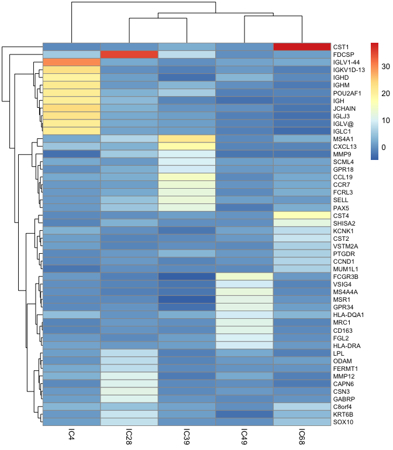 We can observe how it looks for n = 30(30 specific genes for each cell type - component)
markers_30 <-
generate_markers(
df = BEK_ica_overdecompose,
n = 30,
sel.comp = names(immune.components),
return = "gene.list"
)basis_30 <-
generate_basis(
df = BEK_ica_overdecompose,
sel.comp = names(immune.components),
markers = markers_30
)
pheatmap::pheatmap(basis_30, fontsize_row = 6)And finally to obtain the aboundance scores, a function get_scores()can be used.
If you want to use only gene.list
head(get_scores (BEK_ica_overdecompose$counts, markers_10, summary = "mean", na.rm = TRUE))
#> IC4 IC28 IC39 IC49 IC68
#> GSM585300 1015.6910 68.68907 142.01059 205.1942 283.7116
#> GSM585301 1309.1217 114.52619 64.02462 160.9249 316.5380
#> GSM585302 2484.4715 147.33433 561.32776 110.5064 117.8382
#> GSM585303 1641.7940 52.89996 38.92237 87.3892 208.3567
#> GSM585304 185.3009 26.68603 48.57868 128.0455 772.6966
#> GSM585305 5400.0182 98.54236 137.97633 388.9607 212.1527If you want to compute weighted mean (using ICA weights), first transform to a list of data frames:
weighted.list_10 <- generate_markers(
df = BEK_ica_overdecompose,
n = 10,
sel.comp = names(immune.components),
return = "gene.ranked"
)weighted.scores <- get_scores (BEK_ica_overdecompose$counts, weighted.list_10, summary = "weighted.mean", na.rm = TRUE)
head(weighted.scores)
#> IC4 IC28 IC39 IC49 IC68
#> GSM585300 969.9797 57.51394 139.64727 194.54404 191.63500
#> GSM585301 1238.1501 93.36739 60.44216 152.94476 254.92725
#> GSM585302 2386.5932 147.70302 592.17641 102.79626 95.21841
#> GSM585303 1557.1738 41.40888 38.99046 79.37605 201.52527
#> GSM585304 176.4919 21.41715 39.03719 123.14515 578.01167
#> GSM585305 5195.6869 79.47580 119.84810 346.11541 138.89664These scores are lineary correlated with propotion values of each cell type in samples.
We can rename columns according to labels we attributed
colnames(weighted.scores) <- c("B-cell", "Stroma", "T-cells", "Myeloid", "NK")Here we present results in a form of a stacked baplot where scores sum up to 1. The scores used for plot should not be used as final scores, there are just more convinient for visualization putposes.
stacked_proportions_plot(t(weighted.scores))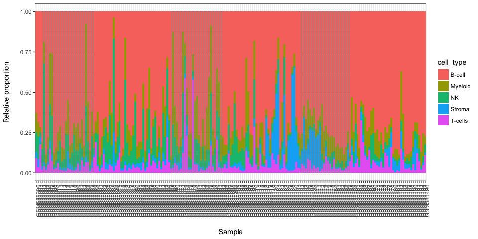
library(MCPcounter)
#> Loading required package: curl
#> Warning: package 'curl' was built under R version 3.4.3
MCP.counter.scores <- MCPcounter.estimate(BEK_ica_overdecompose$counts,featuresType="HUGO_symbols")
stacked_proportions_plot(MCP.counter.scores)#without enothelial cells and Fibroblasts
stacked_proportions_plot(MCP.counter.scores[c(-10,-9),])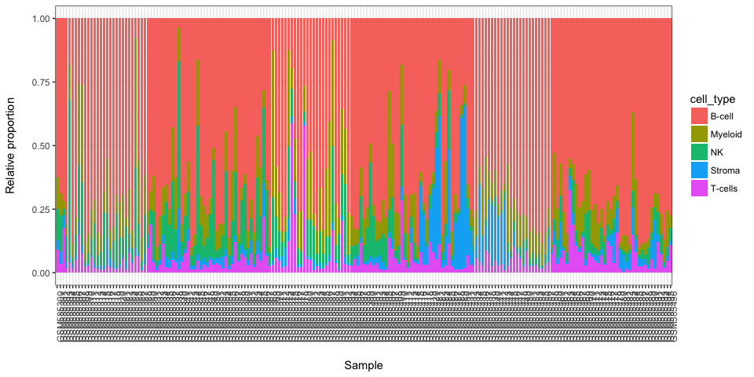
Simulate Data
TBA
Abbas, Alexander R., Kristen Wolslegel, Dhaya Seshasayee, Zora Modrusan, and Hilary F. Clark. 2009. “Deconvolution of Blood Microarray Data Identifies Cellular Activation Patterns in Systemic Lupus Erythematosus.” Edited by Patrick Tan. PLoS ONE 4 (7). Public Library of Science: e6098. doi:10.1371/journal.pone.0006098.
Al-Ejeh, F, P T Simpson, J M Sanus, K Klein, M Kalimutho, W Shi, M Miranda, et al. 2014. “Meta-analysis of the global gene expression profile of triple-negative breast cancer identifies genes for the prognostication and treatment of aggressive breast cancer.” Oncogenesis 3 (4). Nature Publishing Group: e100–e100. doi:10.1038/oncsis.2014.14.
Aran, Dvir, Zicheng Hu, and Atul J Butte. 2017. “xCell: digitally portraying the tissue cellular heterogeneity landscape.” Genome Biology 18 (1). BioMed Central: 220. doi:10.1186/s13059-017-1349-1.
Becht, Etienne, and Aurelien de Reynies. 2016. MCPcounter: Estimating Tissue-Infiltrating Immune and Other Stromal Subpopulations Abundances Using Gene Expression.
Becht, Etienne, Nicolas A. Giraldo, Laetitia Lacroix, Bénédicte Buttard, Nabila Elarouci, Florent Petitprez, Janick Selves, et al. 2016. “Estimating the population abundance of tissue-infiltrating immune and stromal cell populations using gene expression.” Genome Biology 17 (1). doi:10.1186/s13059-016-1070-5.
Bekhouche, Ismahane, Pascal Finetti, José Adelaïde, Anthony Ferrari, Carole Tarpin, Emmanuelle Charafe-Jauffret, Colette Charpin, et al. 2011. “High-resolution comparative genomic hybridization of Inflammatory breast cancer and identification of candidate genes.” PLoS ONE 6 (2). doi:10.1371/journal.pone.0016950.
Biton, Anne, Isabelle Bernard-Pierrot, Yinjun Lou, Clémentine Krucker, Elodie Chapeaublanc, Carlota Rubio-Pérez, Nuria López-Bigas, et al. 2014. “Independent Component Analysis Uncovers the Landscape of the Bladder Tumor Transcriptome and Reveals Insights into Luminal and Basal Subtypes.” Cell Reports 9 (4): 1235–45. doi:10.1016/j.celrep.2014.10.035.
Brunet, Jean-Philippe, Pablo Tamayo, Todd R Golub, and Jill P Mesirov. 2004. “Metagenes and molecular pattern discovery using matrix factorization.” Proceedings of the National Academy of Sciences of the United States of America 101 (12). National Academy of Sciences: 4164–9. doi:10.1073/pnas.0308531101.
Cheng, Wei-Yi, Tai-Hsien Ou Yang, and Dimitris Anastassiou. 2013. “Biomolecular events in cancer revealed by attractor metagenes.” Edited by Isidore Rigoutsos. PLoS Computational Biology 9 (2): e1002920. doi:10.1371/journal.pcbi.1002920.
Chun-Hou Zheng, De-Shuang Huang, Lei Zhang, and Xiang-Zhen Kong. 2009. “Tumor Clustering Using Nonnegative Matrix Factorization with Gene Selection.” IEEE Transactions on Information Technology in Biomedicine 13 (4): 599–607. doi:10.1109/TITB.2009.2018115.
Czerwinska, Urszula, Laura Cantini, Ulykbek Kairov, Emmanuel Barillot, and Andrei Zinovyev. 2018. “Application of Independent Component Analysis to Tumor Transcriptomes Reveals Specific And Reproducible Immune-related Signals.” Springler Proceedings. LVA-ICA.
Elmas, Abdulkadir, Tai-Hsien Ou Yang, Xiaodong Wang, and Dimitris Anastassiou. 2016. “Discovering Genome-Wide Tag SNPs Based on the Mutual Information of the Variants.” Edited by Srinivas Mummidi. PLOS ONE 11 (12). Public Library of Science: e0167994. doi:10.1371/journal.pone.0167994.
Gaujoux, Renaud, and Cathal Seoighe. 2010. “A Flexible R Package for Nonnegative Matrix Factorization.” BMC Bioinformatics 11 (1): 367. doi:10.1186/1471-2105-11-367.
———. 2012. “CellMix: A Comprehensive Toolbox for Gene Expression Deconvolution.” (Submitted). http://web.cbio.uct.ac.za/~renaud/CRAN/web/CellMix.
———. 2013. CellMix: Sample Analyses. CRAN. http://cran.r-project.org/package=CellMix.
———. 2015a. The Package Nmf: Manual Pages. CRAN. http://cran.r-project.org/package=NMF.
———. 2015b. Using the Package Nmf. CRAN. http://cran.r-project.org/package=NMF.
Gorban, A.N., Kégl, B., Wunsch, D.C., Zinovyev, A. 2008. Principal Manifolds for Data Visualization and Dimension Reduction. Edited by Alexander N. Gorban, Balázs Kégl, Donald C. Wunsch, and Andrei Y. Zinovyev. Vol. 58. Lecture Notes in Computational Science and Enginee. Berlin, Heidelberg: Springer Berlin Heidelberg. doi:10.1007/978-3-540-73750-6.
Hart, Yuval, Hila Sheftel, Jean Hausser, Pablo Szekely, Noa Bossel Ben-Moshe, Yael Korem, Avichai Tendler, Avraham E Mayo, and Uri Alon. 2015. “Inferring biological tasks using Pareto analysis of high-dimensional data.” Nature Methods 12 (3): 233–35. doi:10.1038/nmeth.3254.
Himberg, Johan, and Aapo Hyvärinen. 2003. “ICASSO: Software for investigating the reliability of ICA estimates by clustering and visualization.” In Neural Networks for Signal Processing - Proceedings of the Ieee Workshop, 2003-Janua:259–68. doi:10.1109/NNSP.2003.1318025.
Hyvärinen, Aapo, and Erkki Oja. 2000. “Independent Component Analysis: Algorithms and Applications.” Neural Networks 13 (45): 411–30. doi:10.1016/S0893-6080(00)00026-5.
Kairov, Ulykbek, Laura Cantini, Alessandro Greco, Askhat Molkenov, Urszula Czerwinska, Emmanuel Barillot, and Andrei Zinovyev. 2017. “Determining the optimal number of independent components for reproducible transcriptomic data analysis.” BMC Genomics 18 (1). doi:10.1186/s12864-017-4112-9.
Li, Bo, Eric Severson, Jean-Christophe Pignon, Haoquan Zhao, Taiwen Li, Jesse Novak, Peng Jiang, et al. 2016. “Comprehensive analyses of tumor immunity: implications for cancer immunotherapy.” Genome Biology 2016 17:1 29 (1). BioMed Central: 1949–55. doi:10.1200/JCO.2010.30.5037.
Liu, Yuan, Yu Liang, Qifan Kuang, Fanfan Xie, Yingyi Hao, Zhining Wen, and Menglong Li. 2017. “Post-modified non-negative matrix factorization for deconvoluting the gene expression profiles of specific cell types from heterogeneous clinical samples based on RNA-sequencing data.” Journal of Chemometrics, August. Wiley-Blackwell, e2929. doi:10.1002/cem.2929.
Moffitt, Richard A, Raoud Marayati, Elizabeth L Flate, Keith E Volmar, S Gabriela Herrera Loeza, Katherine A Hoadley, Naim U Rashid, et al. 2015. “Virtual microdissection identifies distinct tumor- and stroma-specific subtypes of pancreatic ductal adenocarcinoma.” Nature Genetics. doi:10.1038/ng.3398.
Newberg, Lee A., Xiaowei Chen, Chinnappa D. Kodira, and Maria I. Zavodszky. 2018. “Computational de novo discovery of distinguishing genes for biological processes and cell types in complex tissues.” Edited by Paolo Provero. PLOS ONE 13 (3). Public Library of Science: e0193067. doi:10.1371/journal.pone.0193067.
Newman, Aaron M., Chih Long Liu, Michael R. Green, Andrew J. Gentles, Weiguo Feng, Yue Xu, Chuong D. Hoang, Maximilian Diehn, and Ash A. Alizadeh. 2015. “Robust enumeration of cell subsets from tissue expression profiles.” Nature Methods 12 (5): 453–57. doi:10.1038/nmeth.3337.
Racle, Julien, Kaat de Jonge, Petra Baumgaertner, Daniel E Speiser, and David Gfeller. 2017. “Simultaneous enumeration of cancer and immune cell types from bulk tumor gene expression data.” eLife 6 (November). eLife Sciences Publications, Ltd. doi:10.7554/eLife.26476.
Saidi, Samir A, Cathrine M Holland, David P Kreil, David J C MacKay, D Stephen Charnock-Jones, Cristin G Print, and Stephen K Smith. 2004. “Independent component analysis of microarray data in the study of endometrial cancer.” Oncogene 23 (39). Nature Publishing Group: 6677–83. doi:10.1038/sj.onc.1207562.
Schelker, Max, Sonia Feau, Jinyan Du, Nav Ranu, Edda Klipp, Gavin MacBeath, Birgit Schoeberl, and Andreas Raue. 2017. “Estimation of immune cell content in tumour tissue using single-cell RNA-seq data.” Nature Communications 8 (1). Nature Publishing Group: 2032. doi:10.1038/s41467-017-02289-3.
Schwartz, Russell, and Stanley E Shackney. 2010. “Applying unmixing to gene expression data for tumor phylogeny inference.” BMC Bioinformatics 11 (1): 42. doi:10.1186/1471-2105-11-42.
Teschendorff, Andrew E, Michel Journée, Pierre A Absil, Rodolphe Sepulchre, and Carlos Caldas. 2007. “Elucidating the altered transcriptional programs in breast cancer using independent component analysis.” PLoS Computational Biology 3 (8). Public Library of Science: e161. doi:10.1371/journal.pcbi.0030161.
Vallania, Francesco, Andrew Tam, Shane Lofgren, Steven Schaffert, Tej D. Azad, Erika Bongen, Meia Alsup, et al. 2017. “Leveraging heterogeneity across multiple data sets increases accuracy of cell-mixture deconvolution and reduces biological and technical biases.” bioRxiv, October. Cold Spring Harbor Laboratory, 206466. doi:10.1101/206466.
Wang, Niya, Eric P. Hoffman, Lulu Chen, Li Chen, Zhen Zhang, Chunyu Liu, Guoqiang Yu, David M. Herrington, Robert Clarke, and Yue Wang. 2016. “Mathematical modelling of transcriptional heterogeneity identifies novel markers and subpopulations in complex tissues.” Scientific Reports 6 (1). Nature Publishing Group: 18909. doi:10.1038/srep18909.
Yang, Zi, and George Michailidis. 2015. “A non-negative matrix factorization method for detecting modules in heterogeneous omics multi-modal data.” Bioinformatics 32 (1): btv544. doi:10.1093/bioinformatics/btv544.
Zinovyev, Andrei, Ulykbek Kairov, Tatyana Karpenyuk, and Erlan Ramanculov. 2013. “Blind source separation methods for deconvolution of complex signals in cancer biology.” Biochemical and Biophysical Research Communications 430 (3): 1182–7. doi:10.1016/j.bbrc.2012.12.043.